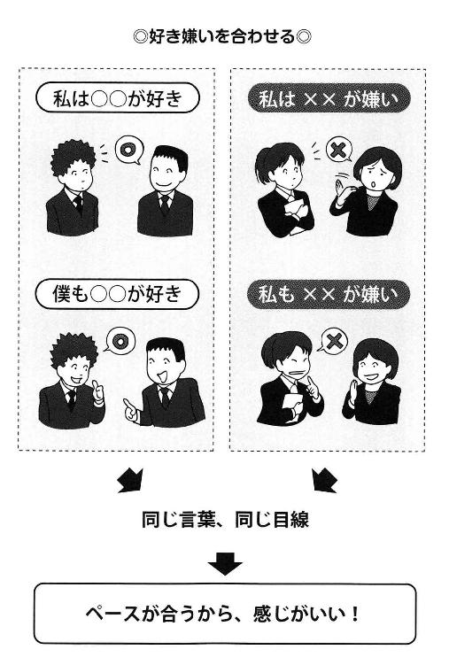
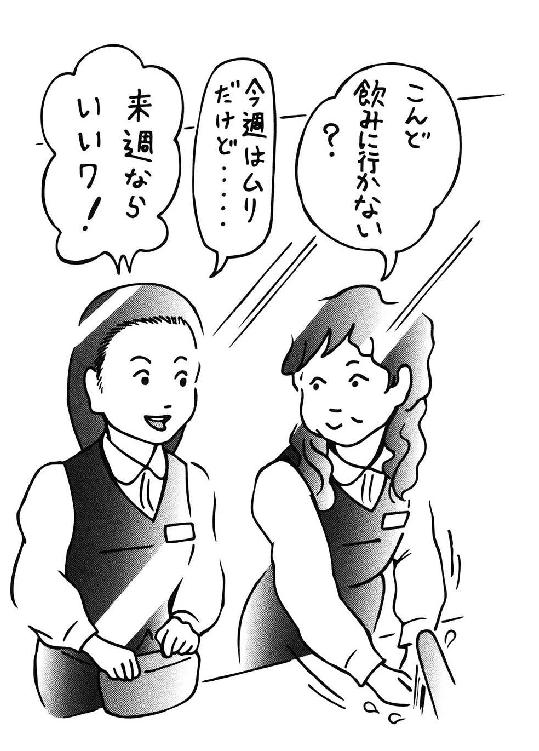

| 「感じがいい」と言われる人の話し方 | |
| 松本 幸夫 | |
| (2016) | |
「感じがいい話し方」ができれば仕事もプライベートもうまくいく！――はじめに
あなたは、もしも自分がもっと頭がよかったら、もっと能力があったのなら、いろいろなことがうまくいくはずなのに、と思ったことがありませんか？
私も以前はそう考えていた時期がありました。しかし今では、むしろ、「感じがいい人こそ、仕事や人生がうまくいく」のだと思うようになりました。
いくら能力や技術、知識が人よりも優れていても、他人の「協力」なくして、人生はうまくいきません。職場でも、プライベートでも成功できている人はみな、周囲が「あの人のためなら」と力を尽くしてくれるくらいに、信頼されているのです。
「感じがいい人こそ、うまくいく」という話で、私は思い当たることがあります。
新入社員時代の頃、私は研修企画の営業をしていて、様々な会社の方とお会いしました。製薬、電気、保険、銀行、官公庁......。業界について相手のほうが知識が多いのは当然として、私の専門の研修についても相手がよく知っていたりします。
そんな方々を相手にしていて、「この人は感じがいいな」とか、「いやな感じの人だ」と、新人の私は直感的に判断していました。
面白いもので、そのときに「感じが悪かった人」というのは、何十年後かに、その会社や業界に「いなくなっている」ことが多くありました。一方で、「感じがいい人」というのはみな、例外なく「偉く」なっているのです。あの人は本部長、あの人はついに社長というように、面白いように出世していました。
もちろん、出世ばかりではありません。感じがいいと、周囲の人も心がなごみます。楽しい雰囲気の職場づくりにも、一役買うことができます。つまり結果として楽しい。なごやかなムードの中で仕事ができるので、必ず生産性が上がります。
「楽しく仕事ができる」って、理想だと思いませんか？
また、感じがいい人のまわりには、自然と人が集まります。「あの人と話していると、なぜか楽しい」とあなたを慕う人が増え、友達もできれば、人間関係でも悩み知らずです。
こう言うと、「でも、僕は特別に明るくないから」「私は話ベタだし......」などと思う方もいるはずですが、心配はまったくいりません。
この本では、「誰でも感じがいい人になれる話し方のコツ」を紹介します。特別な訓練が必要なものではなく、明日からでも試せるちょっとしたコツばかりです。本書のノウハウを実践して「感じがいい人」になれば、仕事も、プライベートも思いのままになるのが実感できます。期待してページをめくってください。
最後に、本書を書くにあたり、日本実業出版社の編集部の方には大変お世話になりました。この方も感じがいい人で、おかげで気持ちよくこの本を書き上げることができました。やはり、感じのよさは大事なポイントなのです。
松本幸夫
プロローグ 「感じがいい人」には誰でもなれる！
１ これからは「感じがいい人」の時代
●頭がいい人が他人を説得できないワケ
「あの人の言うことはわかるけど、でもね......」
「理屈は正しいんだろうけど、その言い方はちょっと......」
あなたは、こんな言葉を社内や他のところで聞いたことはありませんか？
たとえば会議の場で、「君の言うことは正しい、でも......」と言われたら、この後に続くのは、「気に入らない」とか「感じが悪い」といったことでしょう。
営業に行った先でも、一所懸命になって説明したのに、「わかった、あなたが言うのは正論だろう。でも、商品は買わない」と言われることがありえます。
頭がいい人は、「理詰め」で、「論理」だけで人を説得しようとします。
「正しければ、誰でも説得できる」と思っているのです。
しかし、「論理」だけでは人は動きません。絶対に。
デール・カーネギーのロングセラーに、『人を動かす』という本があります。この中には、「論理で人を動かせ」とか、「正しければ人は動く」などということは、１行も書いてありません。
相手に心からの関心を示しましょうとか、名前を呼びましょうとか、笑顔で接しましょうといった"人間的"なことばかりが書かれています。
つまり、人は理性よりも「感情」「気分」で大きく動くのです。
人を動かす原動力は、「理性」よりも「感情」と言っていいのです。
もちろん、数字やデータが重要視されるビジネスの肝心な部分では、「論理」は大切でいい加減なことは許されません。「他社よりほんの少し安くします」「納期はできるだけ早く」などというのではビジネスになりません。
ただ、人を動かして、人に好かれて、協力してもらうとか、長くつき合っていくとなると「情」なしに人は動きません。
●感じがよければ仕事もはかどる
私は、普段、時間活用の研修を様々なビジネスパーソン向けに行なっています。
そこでは、「効率を上げる」「生産性を上げる」といったスキルだけを伝えるわけではありません。
たとえば、「どうやったら職場の生産性が上がるか？」を参加者に考えてもらうと、「働きやすい職場にすること」が必ずトップになります。これは、スキル以前の根本的なこと、建物なら土台にあたるものです。
具体的には、同僚や上司、部下と「仲がいい」ということ。
コミュニケーションが良好ならば、
「仕事を頼みやすい」
「仕事を教えてもらいやすい」
「場合によってはノーと言いやすい」
というように、仕事そのものもはかどるのです。
"生産性"などと難しく考えなくてもかまいません。
あなたも仲のいい人に囲まれて、楽しい雰囲気のほうが、ギクシャクした人間関係の人といるよりもやりやすいでしょう。
「理屈ばかりで、正しいから必ず人は動くのだ」という人よりも「感じがいい人」のほうが、周囲の人が協力して、言うことを聞いてくれます。
「あの人と一緒に仕事をしたい」と思われる人になれば、仕事はずっとやりやすくなり成果も上がります。
これまで、ビジネスの世界では「頭がいい人」がもてはやされてきましたが、一方で、「頭でっかち」の弊害があちこちで現れてきたようにも思えます。これからは、「頭がいい人」よりも、「感じがいい人」のほうが重宝される時代なのです。
２ 最後にものを言うのは「人柄」
●理屈よりも人柄が大事
あなたが経験を積んで、"リーダー"クラスになっていくと、仕事のスキルそのものよりも、人間関係を調整していく力、全体を展望する力が必要となります。
社長は、パワーポイントのスライドは作れなくても、エクセルを知らなくてもいいのです。仮にセールストークが上手でなくても、全社的なビジョンを示し、戦略を立てる力があればいいのです。
ただ、リーダーであれ、現場でバリバリ働くスタッフであれ、すべてのビジネスマンに必要となるのがコミュニケーション能力です。
どんなに能力があったとしても、嫌われてしまっては"オシマイ"です。特に社内では、あまりに嫌われると、「足を引っ張られる」ようなこともあり、いやな思いや不都合を感じるでしょう。
私は早い時期にそんなことも体験して、出る釘という「能力がある人」になるよりも、人に好かれて協力してもらう「感じがいい人」の道を選びました。
頭がいい人が理屈でものを言うばかりだと、「あいつは理屈っぽい」「うるさい」のひと言で煙たがられて、人は離れていきます。理屈、論理がなくていいとはいいませんが、やはり最後には「人柄」がものを言うのです。
どんなにデータをそろえて、理路整然とプレゼンテーションしてみても、「あの人、感じが悪いよね」と思われたなら、中身以前の問題となります。
逆に、この人は感じがいいとか、いい人柄だと最初に思わせれば、よく話を聞いてもらえます。
●感じがいいと信用・信頼も手に入る
営業職であれば、昔のように「商品力」「品質」そのものでは、ほとんど大差のつかない時代になっています。
「他社より、ここが優れている」と言って、いくらデータを山のように示したとしても、お客様は心を動かしてくれません。「あなただから買うんですよ」と言われることを目標にしたいものです。
長くつき合っていって「信用」「信頼」されることが、ビジネスの大きな目的でしょう。あくまでも売上げはその結果と考えてみてはいかがでしょうか。
そのためにも、信用を築いていく前に、「いやな人」「感じが悪い」と思われないことを忘れてはなりません。
もっと前向きに、「感じがいい人」になることを徹底しましょう。そうすれば、やがては信用、信頼という大きな財産を手にできます。
もちろん、仕事だけでなく、意中の人の心をつかむにも、家族を前にしていても「感じがいい」のが最高です。
では、どうやったら感じがいい人になれるのかを、これから述べていきましょう。
３ 感じがいい人になるのに才能はいらない
●じつは私も「あがり症」だった
ものすごく人から好かれていて、感じがいい人って、時々見かけますよね。
あなたは、そんな人を見ると、「やっぱり、才能なのかなあ」とか、「誰でもなれるわけじゃないよね」と思ってしまいませんか？
もちろん、天性の「好かれる人」が、いないわけではありません。
でも、自分で「感じがいい人」に変えていくことは可能なんです。感じがいい人には誰でもなれます。
私は今でこそ研修の講師をしていますが、昔は、すごい「あがり症」でした。
しかし、今になってわかるのは、あのとき、「あがり症」そのものが問題だったのではないということです。
「あがっていると思われたら恥ずかしい」
「あがる自分が情けない」
という思いが自分の態度ににじみ出て、その態度が、周囲に「いやな感じ」と映ってしまうのです。
別に、あがってもいいんです。そのままの自分を認めてしまったら、むしろ周囲は「がんばってるんだな」「助けてあげよう」といい感情をもってくれます。
もちろん、堂々と話すだけの技術を身につけることも欠かせませんが、それはその次のことです。
今の私は、「松本先生はニコニコしていて感じがいい」とか、「何かやさしい感じで親しみやすい」と研修の受講者に言ってもらうまでになりました。
でも、先述したように「あがり症」だった私に感じがよく話す才能はありません。すべて、本書で説明する「話し方」のおかげなんです。
そんな自分を振り返っても、「感じがいい」ということには才能がいらないと、私自身は強く実感しています。
あなたは、今、自分のことを自信をもって「感じがいい人」だと言えますか？
そう言えなくても心配はいりません。なぜなら、「感じがいい人」は、誰でもなれるものだからです。
安心して、先を読み進んでいってください。本書を読み終えたとき、「私は感じがいい人になれるんだ」という自信がきっともてますから。
４ 感じがいいとどんなメリットがあるのか？
●感じがいい人はどこへ行っても好かれる
会社の中では、人に仕事を「頼む」「任せる」という場面があります。
このときに、感じがいい人から頼まれると、なかなか「できません」とは言えないものです。
これには普段からコミュニケーションをよくしていくことも大切ですが、やはり、その場での「感じがいい話し方」がものを言います。
あるいは、他部門との調整や根回しでも、「感じがいい人」の言うことには、みんなが「協力してやろう」という気になって、聞いてくれます。
仮に話がうまくいかなかったとしても、その交渉は決裂しても、「あの人はいい人」だという評価に変わりはないでしょう。
昔、私の父親はものすごいアンチ巨人でした。しかし、「長嶋はいい奴なんだよね」といつも言っていました。巨人は嫌いでも長嶋選手は好き、他にも何人もそういう人がいました。
つまり、「感じがいい」ということは、万一敵であっても「あの人はいい」とプラスに評価されるわけです。
今は、他の会社からヘッドハンティングされたり、社内でも部門の移動などはよくあります。けれど、あなた自身が「感じがいい人」であったなら、「どこへ行っても好かれている」ことになり、大変大きな力になってくれるでしょう。
「バイヤーのときには、世話になりましたね」
「営業時代から、この人はいい人と思っていたんですよ」
と、"旧敵"から言われることさえあるのです。
当然、社内との交渉や営業も「感じがいい」会話ができていたなら、スムーズに進んでいくものです。
もしも「感じが悪い」と思われたなら、交渉や営業以前の問題となります。
ですから、仕事がスムーズに進んでいる人、営業なら実績を上げている人はみな「感じがいい」ものです。
●感じがいい人は幸福感を味わえる
感じがいい会話のできる人は、仕事でもプライベートでもみなに好かれて、すべてがスムーズになります。万が一、話し合いが思うようにならない場合でも、あなた個人は「いい人」という評価を得られます。
人に「感じがいい」と思われているとき、あなた自身も、人からそう思われていることが、はっきりとわかります。
「人から好かれている」というのが自分でよくわかるとき、人間はとても幸福感を味わえます。
この幸福感こそが、感じがいいことで生まれる、一番大きいメリットではないかと私は思っています。
５ 感じがいい話し方の基本中のキホン
●感じがいい人の話には思いやりが感じられる
では、どのような話し方が「感じがいい」のでしょうか？
基本はまず、話し方の中に「思いやり」や「気配り」が感じられることです。
つまり、一方的にペラペラとやってはいけません。
「相手がこういうと、どう感じるのかな？ どう思うだろう？」
と一度自問してから話します。
もちろん、慣れてきたら、考えなかったとしても自然に口に出せるようになります。難しいことはないので安心してください。
相手を自然に思いやることができれば、たとえば、大切な電話中に話しかけることもしないし、「こうしろ、ああしろ」と一方的に命令するようなこともなくなるでしょう。
また、気配りができれば、相手が話してほしくないテーマには触れないものです。
会社において、仮に「会議」や「残業」が決まったものであったとしても、感じがいい人は「この時間で大丈夫かな？」「２時間ぐらいお願いしたいけど平気？」というように、疑問形で尋ねたりします。
つまり、感じがいい人は、常に「相手」のことが頭にあって、"一方的なものの言い方をしない"のが特徴と言えます。
●感じのよさを作るのは品と爽やかさ
さらに、感じがいい人は態度もいいので、口調は強すぎず、ていねいな"品"のあるものとなります。もちろん、問題提起をするプレゼンとか、人に反論する場面では、はっきりと主張することは言うまでもありません。
柔らかくていねいといっても、優柔不断なのとはまったく異なります。ノーと言うべきときにはノー、と自分の立場は常によく知っていて、明らかにします。
そして、何よりも、「会話を交わした後に、相手が爽やかに感じること」が、一番のポイントになります。
「会話術」と言っても、ああ言えばこう言うといった、小手先のスキルとはまったく異なります。
「あの人、感じがいいよね」と会話の後に、相手の心に"余韻"が残せたのなら最高です。
人それぞれ、話し方には「個性」があります。これを直したりする必要はなくて、むしろ伸ばしていくことで、その人らしさが出ます。
ムリに作ることなく、自分らしさを素直に出すことを意識していれば、自然と"感じがいい人"となるのです。
６ 「感じがいい人」に欠かせない６つのポイント
●実行すべきはこの６点
私は今回、「感じがいい人」になれる会話術の６大ポイントを考えてみました。これはそのまま本書の構成とも重なっています。
感じがいい人は、相手との接し方、「会話」そのものが他の人と違っています。
１章 会話以前のマナー
これは、まっ先に身につけなけねばならない、会話術を用いる前の注意点です。
ここがおろそかになっていると、どのような会話術を身につけたとしても、実際には効果を発揮できないのです。
今まで「感じがいい人」になるために努力しても「イマイチ」だった人、ここが抜けていたかもしれませんよ。
２章 「感じがいい人」に変わる会話術
ここには"好かれる"話し方の基本を盛り込んでみました。
相手と話を合わせるとか、意見と事実を分けるとか、すでに知っていたこともあるとは思いますが、体系立てて学ぶことでより理解が深まるはずです。
他にも、話のスピードといったような、「感じがいい人」とどう関係あるのかと思われるような、新しいアイデアも紹介します。
３章 注意したい会話のタブー
カッとしたからといって、相手を怒鳴りつけたら「感じがいい人」になれないのはおわかりでしょう。
すぐ人の言うことを否定するとか、何かの作業をしながら会話をするとか、これをしたら嫌われてしまう......。そんな、"やってはいけない"ことを集めてみました。
４章 人に好かれる言葉と話題選び
「感じがいい人」というのは、会話術もさることながら、１つひとつの「言葉」に敏感です。たったひと言が、ビジネスを左右することも珍しいことではないからです。
この章では、「これを言ってはいけない」といった、言葉を選ぶ基準について考えてもらったり、会話をやわらかくする表現についても触れます。
また、話のテーマそのものにも、感じのいい人は気を配っています。どんな話題がいいのかも同時に説明します。
５章 ほめ・叱り・断り・頼みの技術
ここでは、ビジネスシーンで特に有効な話し方をまとめてみました。
部下、同僚、上司......。
どのようにほめるのか？
どうしたら上手に叱れるのか？
恨まれずに「ノー」と言う方法は？
頼み上手になるには？
「感じがいい人」は、ほめ・叱り・断り・頼みのすべてがうまいのです。なぜ上手にできるのかを探っていきます。
６章 「感じがいい人」の上級テクニック
すでに５章までのテクニックを身につけたら、十分に「感じがいい人」になれます。
ここでは、さらに「好感度アップ」をめざす人のための、上級テクニックについても考えてみました。基本の次の"応用技"の紹介です。
やわらかい表現を使うとか、相手に花をもたせるとか、ついつい忘れがち、陥りがちな点についても考えてもらいます。
会話術にプラスした、ちょっとした態度、行動が応用技なのです。
以上、６章分のポイントを身につければ、あなたは必ず感じがいい人になれます。後は実行あるのみです。
１章 会話の前にこのマナーをおさえよう
１ 会話以前に「座る位置」や「スキンシツブ」に注意する
●最終的には「真横」に座りたい
会話にはまず、「何を話すか」「どのように話すか」の主語になる"話し手"が必要です。同時に「どのように聞くか」の主語となる"聞き手"がいることも、会話成立には欠かせません。
感じがいい会話をするためには、この聞き手の存在を意識することが大切です。そして、その意識は、「会話以前」から必要となっていきます。
まずは相手と自分との「座る位置」です。これは互いに座っているときを考えてください。
このとき、一番「会話がはずむ」理想的な位置どりは、「横に座る」ことです。実際、横に並んで座るというのは、仲のいい友人とか、恋人とか、親密な間でしかなかなかできないものです。バーのカウンターのカップルのように真横に座るというのが、「理想」と思ってください。
さらに言うと、人は無意識に「心臓側」を守ろうとするものです。そこで、相手の「右隣に座る」ことができたら、ベストと言えるでしょう。
もっとも、人に利き手があるように、人によってはどちらに座るといいかは異なりますから、あくまで参考程度に思ってください。
さて、ビジネスではどうでしょう？ いきなり訪問先に行って、相手の横に座ると、「おかしな奴」と思われかねません。いくらベストの位置でも、真横はムリがあります。先述したのはプライベートの心得でいいのです。
基本的には「真正面」というのは、理性の場とも言われていて、"感じがいい"という感性には結びつきにくいものです。
もともと人には「縄張り」があって、あまり親しくないのに、急に接近されて「縄張り」を侵されると、警戒されてしまいます。嫌われかねないのです。
逆に親しい人は「物理的な距離が近い」ので、「縄張りを犯さない限りで、近付く」ことが一番いいのです。
実際には、商談の中で興味があれば、自然に「身を乗り出す」ようなことは誰でもしています。これをあえて意識的にして、少しずつ「距離を近くしていく」のがいいでしょう。
もちろん「真正面」ではなくて、仮にパソコンの画面を見せて話をしたりしていたなら、相手に斜めから話しかけるのも効果的です。
まとめると、感じがいいと思われる理想の位置取りは、
①真横
②斜め
③正面
の順になります。
初対面の相手であれば、正面の位置に座るしかないでしょうが、じょじょに親密になるにつれて、最終的には、横に座りながら「二人が同じ方向を見て」話ができたらいいでしょう。
その前段階として、正面の場合でも距離を少しずつ近付けていきます。相手の体に手が触れるか触れないかぐらいのところが、縄張りのギリギリの境界です。
それ以上の距離は、よほどの親しい人でないとムリですので、ビジネスの場などで「あまり親しくない」相手には避けるのが無難です。
●「ストローク効果」で感じがよくなる
ときおり、やたらに肩を叩いたり、背中をポンと叩いたりと、体に触れるような人がいます。もちろん、ＴＰＯを考えないと今はセクハラになりますが、面白いもので、そういう人は好かれていることが多いのです。
カナダのエリック・バーンは、交流分析の理論で知られていますが、その中で人は物理的な"タッチ"、つまり触れることでコミュニケーションがよくなることを説いています。これをバーンは"ストローク"と名付けました。広義には「心へのタッチ」のような、相手への関心も含まれます。
ですから、コミュニケーションをよくしたい相手には、自然に「触れる」のも、悪くはありません。
実際に、北欧のある航空会社では、顧客のクレームが増加した際に、この「ストローク作戦」で逃がれたという話もあるくらいです。
「お客様、どうなさいましたか？」と言いながら乗務員が「さり気なく」腕などに触れると、ストローク効果でコミュニケーションがよくなり、好感度が上がってしまって、激しくクレームしにくくなるというわけです。
本書は会話術の本ですが、「感じがよく思われるためには、会話だけ磨けばいい」というのでなく、幅広く考えてほしいと思います。
そこで、まずは「座る位置」から考えて、余裕があったら「さり気なく触れる」ような裏ワザも試してください。もちろん、相手やＴＰＯには要注意です。
２ 話しかけるにはタイミングが大切
●リハーサルよりも相手に集中する
何とか感じがいい会話をしたい、と願う人は多いものです。
そこで、セールストークのように「感じがいい人になるトーク」を作文し、中には練習する人も出てくるでしょう。
それは大変よいことです。リハーサルなしに成功できるのは本当にごくわずかの天才しかいません。私も毎日のように人前で話をしていますが、リハーサルは欠かしません。少なくとも、イメージを浮かべて、どのように話すのかはたとえ２、３分でも事前に行なっています。
しかし、これを人と会っているときにも、そのまま延長してやる人がいます。
セールスの最中にセールストークを考えて、「次に何を言おうかな」「たしかこの順番だったかな」と、相手が話しているときに頭の中でリハーサルをしています。
するとどうなるのかというと、「この人、私の話をちゃんと聞いているのかな？」「何か上の空という感じ」と思われてしまうのです。
「感じがいい人」と思われたくて、せっかく「感じがいい人トーク」を考えたのに、逆に「感じが悪い」と思われたのでは、たまらないのではありませんか？
●タイミングを読まない会話は嫌われる
これに似ていますが、「トーク」ばかり考えていて、相手の状況おかまいなしに話しかける人がいます。
「田中さんには、そうだ、この前のサッカーの試合のことを話すと喜ばれるだろうな。何しろ、彼はほとんどのサッカー試合のテレビ中継を見ている大ファンだからね」
ということを考えるのは、まったくかまわないのです。
しかし、田中さんがこれから外回りの営業に出ようとしているときに、「あの、この間のサッカーが......」と言ったところできちんと聞いてはくれないでしょう。
また、さらに話しかけたなら、「ちょっと後にしてくれないかな、今急いでいるんだから」と、逆に嫌われかねません。
つまり、どんなに相手に「感じがいい」と思われる話の中身であっても、そのタイミングが悪いと、嫌われてしまうことさえあるということです。
あなたにも思い当たるふしはありませんか？ もしかしたら、「人の都合」におかまいなく話していなかったでしょうか？
知人の営業マンが電話をしてくるとき、「今、よろしいですか？」「お時間、大丈夫ですか？」と必ず最初に尋ねます。
私自身が電話する際も、「これは大丈夫そうだな」と思ったときでも、「今、大丈夫ですか？」「少しいいですか」と確認をとることにしています。
いきなり「前回の見積もりの件ですが」とやっても、もしかしたら相手はゆっくり話せない状況かもしれないし、心配りは必要でしょう。
会話以前のマナーとして、「相手の状況を考えること」が欠かせません。タイミングがとても大切なのです。
３ 聞き手の緊張をほぐしてから話す
●会話の前にはウォーミングアップを
初対面であったり、あなたが上司で相手が部下だったりする場合、相手がとても緊張していることがあります。
また、仮にそれほど緊張していなかったとしても、いきなり用件を切り出すというのは会話のマナーとしてはあまり好ましくありません。
ビジネスの場では、「あいさつ」「名刺交換」のようなことは半ば儀式化しています。その儀式をしている中で、少しずつ「緊張がほぐれる」ようになるわけです。
電話でのセールスに「ノー」と言いやすいのは、その前の「あいさつ」や「名刺交換」のような、少しでもウォーミングアップになるようなことが一切ない、というのも要因の１つでしょう。
●ボディーランゲージを開けば心も開かれる
ただし、ウォーミングアップは、名刺交換やあいさつだけでは十分とは言えません。
相手の緊張がほぐれているか、大きな目安は２つあります。１つはボディーランゲージ。もう１つは表情です。
幸い、これは相手をよく観察していますとわかるので、注意して「見て」ください。
緊張しているのは、一種の"戦闘体勢"です。基本的にはボディーランゲージが「閉じて」います。閉じて、というのは挙を握る、腕を組む、脚を組む、口を閉じる......というような状態です。昔の労使の団体交渉でも、ハチ巻きして、腕組み、口は真一文字などというのはよく見られた"図"でした。
これは、相手をまだ「受け入れていません」「認めていません」という警戒の段階です。
「感じがいい」と思われるためには、ここですぐに会話には入りません。
まっ先にやるべきことは、この「閉じた」ボディーランゲージを「開く」ことです。「開く」というのは、拳が開く、腕組みや脚組みが解ける。肩の力が抜けてくるような、リラックスした状態になることです。
アメリカで、スピーチは「スタートウィズジョーキング」といいます。これは、よくできていますね。ジョークを言うと笑いますので、当然「閉じている人」が「開かれた人」となり、リラックスができるわけです。
●表情が悪ければ感じも悪くなる
次は、表情について説明します。
コミュニケーションにおいて、どんな表情でいるのかは、とても大切なポイントになります。
というのは、どんな人でも初めて会ったなら、というより、初めてでなくても、まずは相手の「顔を見る」ことから始まります。よほど相手が恐い人でない限り、まずは「表情」がコミュニケーションの始まりになるのです。
すでに警戒を解いている人や、ベテランのセールスマン、人を動かすのが得意な人は、初めてでもニコニコとスマイルを見せます。
「リラックスしていますよ、あなたに敵意はありません」というのを相手に示すわけです。
ここは大切ですので、覚えておいてください。
「感じの悪い人」は、本人にその気がなくても、相手に「イヤな人」と思われるような「閉じた表情（あるいはボディーランゲージ）をしている」ものなのです。
たとえば、あなたの話している最中、ずっと腕組みをしていて、ニコリともしない人を「感じがいい人」とは絶対に思わないでしょう。
こういう事態を防ぐためにあなたがすべきことは、「あなたから先にリラックスして見せる」ことです。これが「感じのいい人」に見せるコツです。
表情は余裕のあるスマイル、肩の力は抜けていて、腕組み・脚組みはしない。
先述したようにジョークを言ったり、相手に関心を示して質問したりするのも「リラックス」していることを示せます。
なぜリラックスを示すのがいいかというと、人は「好きな人の前ではリラックスしている」からです（もちろん、異性でつき合い始めのようなときは別ですが......）。
親しい人には平気で「ありのままの自分」を見せられます。
それを相手に示すことによって、「この人は、自分を親しい人と思っている」ことが印象づけられるのです。
あなたに敵意はありません、好意をもっていますよ、ということを示せるのが、特にスマイル、表情です。
聞き手が緊張を緩ませてから、会話をスタートさせましょう。
ようは「あなたに敵意はないのですよ」ということを示していければいいのです。
４ スマイルの効果は絶大
●スマイルで「安心感」を与える
「感じがいい人」の最大の武器とも言えるスマイルの話を、もう少し続けましょう。
私の場合は、研修のスタート時には意識してスマイルで始めています。
スマイルで始めると、相手もホッとしてくれますし、何よりも講師としての"余裕"を示せます。あがってしまって、ドギマギしていると「大丈夫かな」となりますが、ニッコリ始めますと相手は安心してくれるものです。これは、講師に限らず、営業マンでも、ベテランの余裕をニッコリで示すことができます。
もちろん、真剣になるべき場面でのスマイルが不適切なのは言うまでもありません。問題提起する会議とか、クレーム対応の場面にニコリは不要です。
スマイルの効果は大きく、初対面で「感じがいい」と思われるだけではありません。
今述べたような「余裕」を示して「安心感」をもってもらえます。
●スマイル使いの応用編
さらに、スマイルの応用編を少々お教えしましょう。これも、私が仕事の中でやっているのですが、ごく普通のコミュニケーションでも使えるものです。
これは「テーマを変える場面」「ムードが停滞気味で気分を一新したいとき」に使うスマイルです。
研修であれば、では次のテーマに移ります、などと言うときには、ニコッと思い切りスマイルを出します。
「これから楽しい中身に入っていく」と期待をさせることができるのです。
普段の会話の中で、突然「話は変わるけど」とやられると、いきなり自分の話が切られて、言われたほうはイヤな気分になりますよね。
ここにスマイルを加えて、「ちょっと話を変えますけど」とやると、不思議にあまり反発されません。スマイルには、人の心をなごませる大きな効果があるのです。
また、研修で、ややクラスのムードが沈むようなときもあります。
私の場合、沈滞ムードというのではないのですが、自己分析のチェックリストなどを考えてもらった後は、「気分一新」したいときがあります。
こんなとき、「さあ、どうでしたか？」という問いかけとともにニコッとします。今まで頭を使って、「内側」に向いていたのが、私のスマイルでみな、注意が外に向けられて、気分がサッと変わります。
それ以外にも、「ガンバロウ！」「よし、力を合わせましょう」などというスローガンの直前には、気分を入れ替える意味で、まずはスマイルから、表情から変えていくのです。
と、まあ応用は様々ですが、あまり難しく考えなくてもいいのです。
また、初めは「ひきつった笑い」でもまったくいいと思ってください。
そのあなたの「スマイル」を見せよう、という心の「姿勢」のおかげで、相手は必ず好印象、感じがいい人というイメージをあなたにもってくれるからです。
５ 話す前に嫌われては元も子もない
●あいさつ、身だしなみは基本中のキホン
「感じがいい人」と思われる前に、「嫌われない」ことも心がけたいところです。
嫌われてしまうと、もう会話に入るどころではないからです。
まず、おさえるべきポイントですが、じつは、これは新入社員の研修で習ったことばかりです。
基本はすでにもう、誰でも知っていること。しかし、これができていなかったり、ベテランになっておろそかになったりすると、嫌われてしまいますから、決してあなどれないものです。
「あいさつ」と「身だしなみ」、これはもう基本中のキホンです。
しかし、これができていない人がいます。これは、「マナーがよくない」にとどまりません。確実に嫌われることになりますので、くれぐれも「欠ける」ことのないようにしましょう。
あいさつが、慣れすぎてしまっていい加減になり、「しばらく来なくていい」と得意先に言い渡された営業所長を知っています。
別に条件、価格がおとっていたわけでもないのに、他社に得意先を奪われてしまった方は、「じつは１０年以上出入りしていて、ついついあいさつがおろそかになっていたんです」と言っていました。基本に忠実な他社の営業マンのほうが「感じがいい」と思われたわけです。
身だしなみは、自分ではチェックしきれなければ、同僚、友人にでも尋ねてみましょう。
「ネクタイがいつも曲がっているよ」
「スーツの背中が汚れている」
「ベルトの色がおかしい」
等々、自分ではわからなかった点なども教えてくれますよ。
ちなみに、電車の中で、白いソックスのいい年をしたビジネスマンなど見かけると、私は何もその人のことを知らないのですが、「何だこの人......」と、悪い印象をもってしまいます。
そんな些細なことで感じが悪いと思われてしまっては、つまらないですよね。
●マナーは「嫌われない」ための心配り
車内で無言で人をおしのけていく人。座る際にドスンと腰をおろす人、隣に人が来たのに、少しでも「つめる」ことをしない人。少し電車に乗っただけでもマナーが悪い人は目立ちます。
江戸時代には、乗り合いの船に人が乗ってきたら、隣の人たちが「拳ひとつ」ぶんは腰を浮かせて、次の人が乗りやすいように気配りしたといいますが、そんな精神は現代ではだいぶ失われてしまったようです。
「マナー」については、キリがないのでこのくらいにしますが、会話に入る以前に「何だこの人......」と思われないように、少なくとも「嫌われない」ための心配りはしましょう。
「感じがいい人」というのは、ある特定の場面でだけ感じがいいのではありません。「感じがいい人は、どんな場面でも感じがいい人」だということを忘れないようにしましょう。
ということは、あいさつや身だしなみのような基本、マナーは、どんなときにでも欠かしてはならないのです。
６ 第一印象に要注意
●第一印象を修正するのは大変
一度もたれてしまった第一印象を変えるのには、とても時間がかかります。
仮に、あなたが風邪であまり声が出ずに、ボソボソと小さな声で初対面の相手と話をしたとしましょう。すると、相手は「あまり元気がなくて、声の小さな人」という第一印象をもちます。これは、かなり強力にインプットされてしまうものです。
さて、次の訪問で、あなたは風邪も治り普通にニコやかに会話を交わしたとします。相手はこのとき、「アレ？」と思ってしまうのです。
この人、ずいぶん「ムリしてるな」という感じになるでしょうか。
このように、第一印象は、「この人はこういう人だ」というイメージを相手に強力に植えつけてしまうのです。後から修正するのは大変な労力が必要となります。
「感じがいい人」と思われるには、もちろん相手との接し方、会話の進め方も大事になりますが、同時に「第一印象」は、その後のつき合い方を左右するくらいに大きな力があります。決して、おろそかに考えてはなりません。
ですから、
・大きな心配事があるとき
・風邪を引いているとき
・緊張がひどすぎるとき
のように、いつもの自分がそのまま伝えられないような場合には、思い切って「出直したほうがいい」と私は思います。
アポを取り直して日にちを変えたほうが、むしろ相手には「ありのまま」のあなたが伝わりますので、その後のコミュニケーションがとりやすくなるのです。
●初対面では「マイタイム」を多くする
実際の「会話の進め方」については、この後の章で詳しく述べますが、ここでは、１つだけ「心構え」について、触れておきます。
自分が話す時間をコミュニケーションの「マイタイム」と呼びます。一方、相手が話すのは「ユアタイム」と言います。さて、どちらの時間が多いほうが、初めて会ったときの印象はよくなるでしょうか？
じつは、これはコミュニケーションの進み具合によって変わっていくもの、変えなくてはいけないものなのです。
一般には、「ユアタイム」で相手の話す時間を多くして、「マイタイム」を減らすくらいでバランスがとれます。誰でも、自分の話がしたいもので、その欲求を満たすと、「感じがいい人」と思われます。ですから、話し上手よりもむしろ、聞き上手をめざすつもりでいたら、間違いないものです。
しかし、初対面に関してはちょっと違います。
と言うのは、相手はまだ十分にあなたという人がどんな人か、「知らない」からです。
この段階で相手に「どう思いますか？」「いかがでしょう？」などと「ユアタイム」を増やしても、相手は不信に思うものです。
まだ十分に相手のことを知らないうちに、質問ばかりしても警戒されます。
もちろん、全部の会話で話しまくれというわけではありません。
ただ、初対面においては、自分のことをもっとよく知ってもらうための「開示」が必要になります。これは、企業の情報公開のディスクロージャーと同じで、自己開示（セルフディスクロージャー）という言い方をされます。
初対面では、「私はこういう人間です。こういう面があります。決して、警戒する必要はありませんよ」と、「マイタイム」を多くして自己開示したほうがいいのです。
と言っても、いきなり自分のことをペラペラ話すのではありません。会話の中で、いつも話すよりは「多目に」自分のことを盛り込んでいくのです。
そして、初対面でだいたい自分のことを話せたなら、次回以降は、「聞き役」に徹するつもりで相手と接していくことを考えてください。
２章 感じがいい人にすぐに変われる話し方
１ 感じがいい人の会話の切り出し方
●いきなり用件を切り出してはいけない
会話の前に、"ウォーミングアップ"することは欠かせません。これは、どんな場合でも、どのような長さの会話であっても変わらない原則です。
「いきなり用件はタブー」と心得ておいてください。
仮に営業マンが、得意先に見積書を出すために会ったとします。
避けたいのは、顔を合わせてすぐに「今回の見積もりですが......」と用件を切り出すことです。
９５パーセントぐらいの人は、まずはウォーミングアップ、つまりは「世間話」とか、業界の話、道すがらあった出来事といった「仕事以外の話」をすることでリラックスできます。
感じがいい人は、さり気なく、ウォーミングアップ会話に入ります。
もちろん、世間話を始めると「それより、早く見積もり出してよ」という忙しい人もいます。そんなときには、相手に合わせていけばいいのです。ですが、そういう人は多くはいません。
ほとんどの人は、
「まだ、初雪が降りませんよね」
「やっぱり温暖化が進んでいますかねぇ」
といったウォーミングアップから入っていくことを好むものなのです。
●世間話で自然に会話を始めよう
まずは好感度アップのために、「自然に」世間話ができるようにしておきましょう。
じつは、慣れないうちは、これがなかなか、スラスラとは出ないものです。
といっても、誰でもできることですから、あまり厄介なこととは思わなくてよいのです。
ただし「リハーサル」はしてみましょう。テーマは何でもよいのですから、新聞やネットで見た、ちょっとしたニュースをネタにしておけば無難でしょう。
普通の話でしたら、ほんの少しスマイルを加えて（もちろんテーマが災害や悲惨なことなら笑いはなしに）、
「あと２、３日は雨だそうですね」
「日本は優勝できますかねぇ？」
「景気、やや上向きだといいますね」
というように、一度口に出してリハーサルします。
その上で、客先でひと言、自然に口から出してみることです。
これから、「感じがいい人」の会話の切り出し方を注意して見てください。
みな例外なく、ごく自然に、リラックスして肩の力を抜いて話し始めているのがわかるでしょう。
「昔からの友人」「仲のいい人」であれば、ずっと前から知っているので、ごく自然に話し始めているものです。「感じがいい人」は、普通に話し始めています。
あなたは、リハーサルをしておくことで、このような自然体で話を切り出すことが可能となります。
じつは、あまり切り出し方を考えすぎることはないのです。
そうすると、極端に言うと、結婚式のスピーチのような、「あらたまった話」となってしまいます。これは、リラックスとは反対の「緊張」「堅い」というイメージとなります。
ですから、会話の冒頭はありふれた話をすることで、かえってリラックスでき、自然体の「感じがいい人」になれると覚えておいてください。
２ わかりやすい話は「時系列」になっている
●あの人の話がわかりにくいワケ
感じが悪い人は、「何を話しているかよくわからない」ものです。
逆に、「あの人の話、わかりやすい」というのは、感じがいい人の条件の１つといっていいでしょう。
つまり、わかりやすく話す人、イコール感じがいい人というわけです。
そこで、どうしたら話が「わかりやすく」なるのかを考えてみましょう。
わかりにくい人の話は、途中で聞き返さないとわかりません。
「えっ、誰と一緒だったの？」
「子供と主人」
「それで、いつ頃のこと？」
「３年前だよ」
何回も途中で尋ねないと、状況がはっきりしません。
何がいけないのかというと、ただ思いついたままに口に出してしまうからです。
「この間、ウチの犬がね......」
「冬休みに山登りしたらさ......」
という感じで話をスタートさせますから、会話の途中で情報のモレが出てきてしまい、わかりにくくなります。
●わかりやすい話は「昔話方式」が基本
誰にでもわかりやすい話の例は、何といっても"昔話"でしょう。わかりやすいので、記憶にも残りやすく、時代を経て伝えられていくわけです。
ちなみに、浦島太郎でも、桃太郎でも、話の出だしを考えてみてください。
「昔々」 ...いつ
「ある所に」 ...どこで
「おじいさんとおばあさんが～」 ...誰が
「おじいさんは山へ芝かりに、
おばあさんは川へ洗濯に～」 ...何を
というように、最低でも話の「いつ」「どこで」「誰が」をはっきりさせた上で、わかりやすく"時系列"で話が展開していきます。
ストーリー性のある話や、出来事を会話に盛り込むときには、この「昔話方式」を取り入れてみるといいでしょう。あなたの話はずっとわかりやすくなり、「感じがいい話をする人」と思われるものです。
さらに話が進んで、「それからどうなったの？」という、興味をもった質問が相手から出てきたなら大成功です。
「いつ」「どこで」「誰が」をはっきりさせ、その上で時間順に起きたことを話していきましょう。
３ 意見と事実を分けて話す
●どこからが自分の意見かを明示する
「感じがいい人」というのは、どこまでが自分の意見なのか、どこからが事実なのかの区別がはっきりしているものです。
逆に、感じが悪い人というのは、意見も事実もゴチャまぜにしてしまう傾向があります。
特に"嫌われる"タイプは、「お前は～だ」「君は～でしょ」という言い方をします。それも「事実」と「意見」が一緒になってしまっているものです。
たとえば、「今月、遅刻が２回目だね。注意しなさい」くらいのことは、上司なら部下に言うでしょう。
しかし、意見とごちゃまぜになると、こんなふうになります。
「君は、いつも遅刻ばかりして、たるんでいるぞ！」
この「いつも」とか「たるんでいる」というのはおそらく"事実"ではなくて、あくまでも「そう思う」という意見でしょう。これをそのまま本人に、レッテルのように貼りつけてしまうと、嫌われてしまうものです。
あるいは、部下から上司への報告ではどうでしょうか？
仮に営業先に行った帰り、「かなりいい感触です。来週にはオーダーがとれます」と、意見を事実であるかのように言ってしまうと、どうなるでしょうか？
万一オーダーがとれないと、「すみません課長、ダメでした」「何だって、先週、オーダーがとれると言ってたじゃないか！」と叱られることもあるでしょう。
「感触はよかったので、私の感じでは可能性は高いです（←意見）。ただ、確約はとれていないので（←事実）、来週までお待ちください」というように、自分の意見と事実を分けて考えるとよいのです。
特にビジネス上で、誤解を防ぎ嫌われないために、次のようなつなぎの言葉を、自分の意見の前に入れるようにしましょう。
「ここから先は、私の意見ですけど......」
「ここまでは事実で、あとは私見ですが......」
「これを元にして、私はこう考えたんです。それは......」
「私の考えを聞いてください」
「あくまで私の意見なのですが......」
このようなことをはっきり口に出したなら、ここから先は彼、彼女の「意見」なのだということがはっきりするわけです。
●「雄弁術」では感じはよくならない
報告や連絡のように「事実」のウェイトが大きいときには、特に「どこからどこまでが事実なのか、意見なのか」は明示する必要があります。
また、一般のコミュニケーションでは、特に「あの人はこうだ」「彼女は○○だ」といった決めつけは、嫌われる元になりかねません。このときにも、正しく「自分は彼はこういう人だと思う」という表現をしましょう。
決めつけは、あたかもそれが"事実"であるかのように伝わります。
実際、政治家などはレトリックや雄弁術をよく使います。
仮に誘致できるかどうかわからなくても、また自分の意見のはずなのに、
「当選しましたら必ず、新幹線の駅を誘致します！」
「絶対予算を確保しますのでご安心を」
などと言います。
目的は自信を感じさせることですが、やはりあくまでも意見は意見で、あたかも事実であるかのように言い切ってしまうのは問題もあるのです。
「郵政を民営化したいと思います」が、「必ず民営化します」となるのが、雄弁術です。
しかし、「感じがいい人」と思わせたいのなら、あくまでも意見は意見として正しく伝えるべきです。そのほうが「誠実」なのです。
そして、誠実というのは、感じがいい人には欠かせない条件です。
４ 感じがいい人の声と話すスピード
●声に自信がない人でも大丈夫
先述したように、話を「わかりやすく」するのは、感じがいい人には欠かせないことです。では、「声」や「話し方」にも、同様に、わかりやすくするコツがあるのでしょうか？
声の質そのものは、まず、もって生まれたものがあります。
だからといって、ボイストレーニングまですることはお勧めしません。
たしかに、声がよく通るほうが聞きやすいのは間違いないですが、アナウンサーのように「声」がよければ、それだけで感じがいいとはならないからです。
声の質は誰でも変えられるものではないので、ここでは誰でも可能な、好かれる２大ポイントをお教えしましょう。それは、
①間をとる
②語尾をはっきりさせる
この２つだけです。
多少、声質がアナウンサーには劣っていたとしても、この２大ポイントを意識したら「わかりやすく」聞こえます。
また、これは「早口」だから聞きにくい、という誤解も解いてくれるものです。
●大事なのはスピードではなく「間」
話し方についてよくある誤解は、「ゆっくり、わかりやすく」話すということです。
私は研修で年に平均１５０回から２００回前後、１回に平均３０名前後の受講者の話を聞きますが、「ゆっくり」イコール「わかりやすい」のではないことを強く感じています。
早口でもわかりやすい人はいますし、ゆっくり話をしていても、「嫌な感じ」を与える人もいます。
たとえば、ゆっくりやりすぎると、
「み な さ ん 、こ ん に ち は 。わ た し の な ま え は......」
というような何とも間延びした、"不自然"な話し方となってしまいます。
ちなみに、アナウンサーのような声質で、ニュースを読むような日常会話をしたらどうでしょうか？
おそらく「不自然さ」が先に立ってしまい、「嫌な感じ」となってしまうはずです。
ゆっくりやりすぎると、わかりやすさよりは、違和感、不自然さばかりが伝わるものです。ゆっくりでいいのは、会社の名前、プロジェクトの名前、自分の名前というような、早くいうと理解しにくいところに限ります。
どんなに早口でも、文と文の間に、しっかりと間をとるとわかりやすくなります。早口の人でわかりにくいのは、文と文までもそのままつなげて話をしてしまうからです。ですから、「。」でしっかりと間をとること。
話術の名手と言われた、ラジオ時代の徳川夢声氏は、話し上手になる秘訣は「間」であると説きました。
キャンバスの上の絵は、白地があってこそ絵として成り立つのであって、絵の大事な部分とは「白地」というようなたとえを夢声氏はしました。
つまり、話も、十分な「間」があってこそ、引き立つのです。
●語尾ははっきり発音する
そしてもう１つが「語尾」です。何となくはっきりせずに、周囲をイライラさせる人の話は、いつも語尾がはっきりしないのです。
日本語は、構造上、文末までいかないとイエスなのかノーなのか、はっきりわからないことが多いものです。
「来週の木曜の会議には出席できます」
「来月の社内旅行には参加しません」
というように、この文末、語尾が確実に伝わらないと、意図ははっきりしません。
ですから、この語尾をごにょごにょ、もぞもぞと言いますと、「はっきりしてくれ」と思われるのです。
また、語尾で意味が逆になることもありえます。「賛成しません」とか、「同意できかねます」などという言い方も、やはりはっきりと発音しないと、まったく逆の意味となってしまいます。
もしも、相手が聞き違えたなら、「この前はイエスと言ったのに、急にノーになるのか」「そうは、言っていない」「いや、言ったはず」というようなディスコミュニケーションとなりかねません。
普通そこまでは考えないかもしれませんが、「語尾をはっきりと発音する」ことは、誤解を防ぎ、正しくコミュニケーションをとっていくためにも欠かせないことなのです。
５ 結局は"自然"が一番
●「プロ」っぽい話し方は嫌われる
先ほど、間をとること、語尾をはっきり話すことの重要性について言いました。
また、「ゆっくり、わかりやすく」をやりすぎると、わざとらしい話し方となって"嫌われる"とも言いました。
つまり、話し方のスピードは、あなたが普通に親しい人と話をしている"ナチュラルスピード"が一番いいのです。
これを、あらたまって変えようとすると、嫌な話し方となってしまうのです。
話の「プロ」という人でも、どうしても"ナチュラル"な感じが出ない人は、あまり「自分らしさ」がありません。
たとえば、落語家には特有の話し方があって、「慣れた」感じがします。
しかし、私は落語そのものは大好きなのですが、あの妙な落語以外の場面での話し方は、慣れすぎていて嫌いです。皆さんはいかがでしょうか。すぐに「あっ、落語家の話し方」と感じて、自然な自分らしさがないように思いませんか。
また、アナウンサー出身の人の中でも、ナチュラルな人は、「自分の話し方」をしているので好感がもてますし、人気もあります。しかし、「アナウンサー的」に、ニュース原稿を読むような発音、発声をされたりすると「嫌い」になります。
「この人、友人ともこんな話し方をしているのかなぁ？」と思ってしまいます。
要するに、家族や友人と普通に話をするときのスピード・話し方が、あなたの「自分らしさ」が出た話し方なのです。
●言葉の"ヒゲ"は気にしなくていい
人前でのスピーチなら「アー」とか「エー」というような言葉の"ヒゲ"、「Non Words」というものはあまりよくありません。
しかし、知人とのコミュニケーションでは違うでしょう。どんな人でも「エー」とか、思い出すときの「アノ」「ホラ」「アレ」などといった言葉が「自然に入って」いるものです。
私は「話すこと」も仕事で、いちおうはプロです。今の悩みはいかにして「自然に」話していくかということです。
毎日注意点を「考慮して」話していますと、それがそのままトレーニングになり、今は「エー」とか「アノー」などということは、まず講師をしていて口にしません。
しかし、最近はわざと入れる、こともしています。そうしないと、あまりにも慣れてしまって、「プロっぼく」なってしまうからです。
私も始めは、語尾の「ね」が、「これはわかりましたね」「いいですね」と無思慮に入っていたので、なくすようにしました。
もちろん、「アー」「ウー」の類もなくしました。まあ、こちらはもともとあまり言わなかったのですが。
そして、結果として、「プロっぽい」話し方になりました。
ところが、もしかしたら落語家特有の話し方のように、あるいはアナウンサーのように、"ナチュラル"なところがなくなっていはしないか、と心配しています。
そこで、あえて「アマっぽく」するようにしてバランスをとるのですが、話し方というのも、なかなか奥が深いと感じています。
ともかく、普通のコミュニケーションなら、言葉グセも方言もまったく気にしなくていいのです。
あなたの成長とともに「言葉」も成長して、ナチュラルに話してきたわけですから、この「ありのままのあなたの話し方」が一番好かれるのです。
●自然だからこそ感じがよくなる
私には娘が一人います。まだ幼稚園くらいの頃、言葉そのものはたどたどしかったのですが、初めて自転車に乗れたことを、出張先の私に電話してきたことがあります。
「アノサー、パパ、うんとね、じてんしゃなのね、のれたの......」
私は「そうか、乗れたのか」と、とても喜びました。
そのときの娘の話は「話し方」からすれば、基本もなくメチャクチャでしょう。
でも、人の心を打つことができました。
自然に、ありのままに、自分の本当に話したいことを口にしたからです。
感じがいい人は、何も理路整然と話すことばかりで好かれるのではありません。
ときには自分の言葉で、感情をストレートに伝えること、ありのままに話すことで好かれるのです。
６ 相手の意向は必ず聞こう
●相手と自分のバランスを考える
若いカップルがデートしたとします。食事に行った先で、
・「僕は中華がいいや」と言って、先に店に行ってしまう男性
・「君は何が食べたい」と、まず女性の意向を尋ねる男性
・「僕は中華がいいけど、君は？」と自分の意見も言って相手の意向も尋ねる男性
さてあなたが女性なら、どの男性が好みでしょうか？
私は、研修の受講生に休憩時間に尋ねたり、知人、家族などにも尋ねてみてわかりました。
まず、今まで一人もいなかったのが、相手のことだけを尋ねる男性を選ぶ人。
つまり、「君（あなた）は何が食べたい？」と言うだけだと、何だか頼りなくて、自分の意見はないのか、と思われてしまうようです。
次に、「僕は中華がいいや」タイプ。これは２割ぐらいの人がいいと言いました。
自分で決めて強引に引っ張っていくタイプがいい人も、中にはいるわけです。
しかし、圧倒的に人気なのは、自分のことを言った後に、さり気なく相手の意向を尋ねるというタイプでした。自分だけで決めてしまう人も、ひと言「君は？」と付け加えることをしたなら、こちらのタイプになります。
「感じがいい人」は、たんに「あなたはどう思う？」「君は？」とやるのではなく、
①自分の意見を言う
②相手のことも配慮する
ことがバランスよくできる人なのです。
私は「コミュニケーション」に関わるセミナーをしていますので、このような人を動かす「会話の仕方」にはとても興味があり、実践もしています。
もちろん、自分の意見を言ってから、あなたは？ という話法は男女かかわらず、受けがいいのです。
相手の立場に立つ、というのは、コミュニケーションを良好にしていくためのゴールデンルールです。ただしこれは、いたずらに「あなたはどう思うか？」と相手の意向を尋ねるだけではないのです。
「ひと言いったほうがいい」「まずは自分がリードしていかなくては」という状況や立場にあれば、まずは自分の主張をすることです。その上で、「あなたは？」とやればいいのです。
自分の意見もしっかりもっているし、相手のことも考えてくれている、こんな人は必ず「感じがいい」と思われるものなのです。
７ 聞き手が注意したい３大ルール
●基本は相手の目を見ること
相手が話しているときに「聞き手」として行なうと、「感じがいい」と思われるルールを３つ紹介しましょう。すなわち、
①相手の目を見てうなずく
②相手の目を見てあいづちをうつ
③相手の目を見て質問する
の３つです。

ことさらに「相手の目を見て」と強調したのには理由があります。
たとえば「うなずく」のも「あいづち」も「質問する」のも、すべてコミュニケーションをよくして、「感じがいい」と思われるためには欠かせないものと言っていいでしょう。
しかし、もしもこれらが、「相手の目を見る」ことを含んでいなかったら、逆効果になってしまうものなのです。
「そうですか、なるほど」と言いながらも、目は相手から外して、あらぬ方向を見ていたらどうでしょう？ もちろん、「この人、ちゃんと聞いていないな」と思われて、イメージは悪くなります。
また、うなずいてはいるものの、チラチラと外を見たり、時計を見ていたらどうですか。これも、「嫌な人」と思われかねないのです。
ですから、あなた自身は「あいづち」や「うなずき」をしていたとしても、「相手の目を見ながら」という基本を外してしまうと、やればやるほど「嫌われる」ことになりますから、要注意です。
もちろん、「質問する」のも同じです。
見当外れの質問をしたり、二度も三度も同じ質問をするのは「聞いていない」と言っているのと同然ですから論外ですが、せっかくのポイントをついた質問であっても、目を見て行なわないと、どうも「上の空」に思われたり、真剣味に欠けると思われてしまうようです。
しかも恐いのは、照れ屋で恥ずかしくて「目を見ることのできない」のも、何となく悪意があったり、相手が好きでないから「見ない」のとの区別がつかないのです。
つまり、相手にとっては、どちらも「目を見てくれていない」のは共通しているわけです。
●「よく聞く型」で話し上手になれる
「目を見ない」といかにおかしなことになるのかは、ものの１分もやってみたらわかります。
「なるほど」とうなずきながら、相手を見ていないとしたらどうですか？
「へぇー、すごいですね」というあいづちも、外の景色を見ながら言うとどうでしょう？・
「それからどうなりました？」と興味深そうな質問も、しっかりと相手を見たときにこそ、力を発揮してくれるものです。
しかも面白いもので、「Motion（行動、動作）」が「Emotion（感情）」を生み出すというアメリカの哲学者ウィリアム・ジェームスの言葉のように、「よく聞く型」をとると、本当に「この人の話を聞こう」となるから不思議です。
相手の目を見てしっかりとうなずく。
適度にあいづちをうち、質問していく。
この「型」をとることで、いつのまにか、人の話が聞けるようになっていきますから試してみましょう。
そして、人の話をよく聞くことは、感じがいい人には欠かせない条件なのです。
８ 相手が嫌いなら自分も嫌いと言う
●好き嫌いが合えばぺースも合う
私たちは、自分を肯定して認めてくれる人が好きです。
たとえば、幼ない子はおじいちゃん、おばあちゃんが大好きです。
なぜなら、「やめなさい」「ダメじゃない」ということを言われないからです。
これが親なら叱ったり、どなったり、うるさく「否定」されてしまうようなこともあるでしょう。
しかも、親が上から見下すように「叱る」ようなことは、決しておじいちゃん、おばあちゃんはやりません。
「ここはブーブーが来るから危ないよ」
と、子供の目線にまでしゃがみこんで、しかもいい大人が「車」といわずにブーブーというのです。
同じ目線、同じ言葉。これは相手とペースを合わせて好感をもたれるために欠かせないことなのです。
それをしているから、幼な子におじいちゃん、おばあちゃんは好かれるのです。
さあ、ここから「ペースを合わせる」ことが"感じがいい人"には欠かせないことであるのに気付きませんか？
たとえば、幼い子が言います。
「僕、ピーマン大嫌い！」
これが親なら、「ダメだよ、食べなくちゃ」と叱ったりします。
しかし、祖父母なら、必ずペースを合わせるのです。
「そうか、太郎は嫌いなんだね。おばあちゃんも嫌いなんだよ」
と言うでしょう。

幼な子に限らず、相手が好きなら自分も「好き」と言うことです。相手が嫌いなら、自分も「嫌い」と言うことでペースは合うのです。
得意先の部長が言ったとします。
「最近ジョギングを始めたんだよ」
さて、ベースを合わせるためには何と言いますか？
嫌われる人は、悪気はないのですが、つい相手を否定してしまうようなことを言います。たとえば、「ジョギングはひざによくないらしいですね」と。
私も以前サーフィンで日焼けしていたときに、多くの営業マンはみな「いいですね、健康的で」と、私に合わせてくれたのに、一人だけ「日焼けは皮膚によくないんですよね」と言う人がいて、二度と会いたくないと思いました。
相手の言うことなすことすべてに、まずは「いいですねぇ」と言う習慣をつけましょう。始めから否定してしまうのは、百害あって一利なし、嫌われるだけです。
３章 好感度ダウン！ 注意したい会話のタブー
１ 前後関係の見えない話はしない
●感じがいい人の話は「わかりやすい」
「この間のコンサート、すごい面白かったんだ！」
「友達とバッタリ会っちゃって驚いたよ」
というような話をする人がいます。
しかし、いきなり「コンサート」「友人と会った」と言うのは、あまりにも唐突すぎます。が、言っている本人には、ほとんど自覚がないのが困りものです。
会話の中では、相手はあなたではありません。ですから、「何も知らない」と思っていて間違いありません。
感じがいい人の話というのは、とても「わかりやすい」のが特徴です。ビジネスならば、相手を見て判断のできる人です。
「この人には、あまり専門用語は使わないようにしよう」
「英語は入れないようにしよう」
というように、相手を見て、適当な言葉で表現していくのです。
結果、「わかりやすい」となり、それは感じがいい人の条件にもなっています。
あいつの話はわかりにくいんだよね、と思える人を観察してみましょう。
すると、おそらく「ウチの犬が」とか、「この間スキーに行って......」というように、何の脈絡もなく、突然、話が始まっているのがわかるはずです。
●わかりやすい話の"黄金律"
こういう事態を防ぐポイントは２つあります。
これを守ると、唐突な印象はなくなって、しかも話そのものがわかりやすくなります。相手が理解しやすい話をするというのは、ビジネスでもプライベートでも共通して守るべき"黄金律"と言ってよいのです。
では、どんな点に注意したらよいのでしょうか？
①つなぎの言葉を必ずつける
英語では「Bridge Word（橋わたしの言葉）」という言い方をします。
前後関係のない唐突さは、接続詞がないからそうなります。たとえば、
「ところで先月なんだけど......」
「そういえば思い出した。じつは......」
「こういうことがあったんだ。それは......」
ところで、じつは、それで、というようなつなぎの言葉を、必ず入れてからあなたの話に入りましょう。
②描写を詳しく、リアルにする
５Ｗ１Ｈを守って話を詳しくするのは、基本中の基本です。
「ところで、先月の１日なんだけど、横浜アリーナでＢｏＡのコンサートに行ってきたんだ。そのときに......」
「４月５日に、大阪から新幹線に乗ったら、名古屋駅から１０年前の友人が乗りこんで来て......」
と詳しく話をしていくと、「コンサートが」とか「友人と会って」といきなり話すよりも、はるかにわかりやすくなるものです。
あなたの話は、
・いつのことなのか？
・誰がいたのか？
・場所はどこか？
を意識し、詳しく話すことを心がけましょう。これだけでも「わかりにくいなぁ」「あいつは唐突なんだよ」というマイナスイメージが取り除けます。
もう１つ、"リアルに"ということも盛り込めたらプロ級です。これについては次の項目でお話します。
２ リアルに話すには五感に訴えかける
●ありとあらゆる表現を用いて五感を刺激
話を「リアル」にできる人は、人気があります。
とても生き生きとした話は、人を元気づけてくれるもので、誰でも元気になりたいから、リアルな話をする人のそばに寄って来ます。
ただの事実を、いかにしてリアルに表現できるでしょうか？
細かいディーテイルを言うのも１つのやり方です。
カップのお茶と言うよりは、ウェッジウッドのピンクと白の花柄のティーカップのお茶と言ったほうが、わかりやすくなります。
さらにリアルにするには、五感に訴える表現を入れるとよいでしょう。
花をくすぐるような、甘い香りの、淡い赤をしたローズヒップティー。まあ、ここまでやるとちょっと長いので、「真っ赤なローズヒップティー」と視覚に訴えかける。あるいは、鼻孔をくすぐるような甘い香り、というように触覚や嗅覚を含めた表現をしたりすると、ずっとよいのです。
「ミルクのような香り」
「ザラザラした手触わり」
「生ぬるい水温」
「目に痛いぐらいの鮮やかな緑色」
言い方は様々でしょうが、できるだけ五感に訴えかける言い方を工夫してみてください。
そしてより完璧にするには、さらに「音」「効果音」「擬音語・擬声語」を加えます。
「ドキドキしちゃいました」
「ヒャーッと思ったんです」
「ドカーンというものすごい音が......」
と言うようにしてみます。
先の項目も含め、「わかりやすい話し方」をまとめると次のようになります。
①唐突にならないために、必ずつなぎ言葉で話に入る
②５ＷｌＨをはっきりさせて、事実をつかんでもらう
③五感に訴えかけたり、擬音語等を用いてリアルさを出す
なお、最後の「ウワー」とか「ドカン」などというのは、あまり用いると本人の「品」がなくなりますから、乱発、乱用は避けてください。
これを守れば、「話がわからない」「つまらない」「前後関係がない」などと言われることもなくなって、あなたは必ず「感じがいい人」になれます。
３ 「だって」「ていうか」は禁句
●人をすぐに否定する人は嫌われる
私は普段の研修の中で、受講者に「嫌われる人の条件」を挙げてもらうことがあります。そこでよく「人をすぐに否定する」という項目が挙がってきます。
私もそんな人を見かけたことがあります。しかも恐いのは「本人にはコミュニケーションを悪くしている自覚がない」点です。こういう人に限って、「なんで自分が嫌われているのかわからない」などと平気で言うものです。注意しましょう。
私が、ある保険会社の企業内で研修したときのことです。
年齢はバラバラでしたが、みな生命保険の営業をしている方たちです（あくまでも例で、他意はありません。念のため）。
昼食時に、会場にお弁当が出て、参加者と車座になって一緒に食べていると、その中の一人、２０代前半の方で、健康的なスポーツでもやっている雰囲気の人が、
「この間の休み、グアムに行ったんですよね」
と話し始めました。私も会話の流れで質問しました。
「何かマリンスポーツをなさるんですか？」
「いいえ、しません」
とこの方は答えました。
仮にしないにしても、「いいですね。やってみたいんですが、できないんですよ」ぐらいは言ってほしかったのですが、ただ「ノー」という感じでした。
「そうすると、海岸で日焼けでも......」
「いいえ、焼きません」
「黒くなるとイヤですもんね......」
「いいえ、赤くなります」
一事が万事この調子ですから、周囲もシラけた雰囲気で、とても気まずくなりました。
相手の言うことにすべて「ノー」では、いいコミュニケーションは成り立たないということです。
●使ってはいけない「３Ｄ言葉」
今のは極端な例ですが、他にもコミュニケーションを知らないうちに悪くしている「タブー語」があります。
それは「だって」「でも」「ていうか」というような、相手を否定してしまう言葉です。私はこれを３Ｄ言葉と名付けて、「極力使わないこと」をお勧めしています。
「でも」
「どうせ」
「だって」
の頭の「Ｄ」で３Ｄです。
「でも」と言った後には必ず、相手を否定する、自己正当化の内容が続くものです。
「でも、おかしいと思います」「でも、それって自分勝手じゃありませんか」という具合です。
「どうせ」は、相手を否定するというよりも自分を否定してしまっている、やはり乱用すると感じが悪くなる言葉でしょう。
「どうせ、いいことないよ」「どうせ、やってもムダ」と言う人が好かれることはないものです。
「だって」というのは、「しかし」と同じで、相手をやはり否定します。素直な「ハイ」のほうが、どれほどいいかわかりません。
仮に上司に叱られて、「だって、時間がなかったんですから」「だって、難しすぎますよ」と答えていては、好かれることはありません。
むしろ、感じが悪い部類に入ります。「すみませんでした」でいいわけです。
もう１つ、何の意味もなく「ていうか」を使う人も注意しましょう。本人にとってはただの"口癖"かもしれませんが、相手の言い分を否定していることになります。
「同僚の山本さんとうまくいってないんだ？」
「ていうか、仲が悪いんです」
同じじゃないの？ と突っこみたくなるくらい、「ていうか」を使う必要はない場面です。「そうですね」ですむわけです。
「最近、田中さん頑張ってるよね」
「ていうか、努力してますね」
「あの企業は今、伸びてるよ」
「ていうか、成長してますよね」
などというやりとりが続くと、「ていうか」を言われたほうは、けっこう気分を害しているものです。
私も時々こういう人に出くわしますが、内心、「この人は性格悪いなぁ。別に"ていうか"と言わなくてもいいのに......」と思います。そして、その人とはあまり「近づきたくはないな」と思ってしまいます。
なぜかこの頃、人が近づかない、という人があなたのまわりにいたら、「ていうか」を使っていないか見直してみてください。

４ 感情をストレートに伝えない
●コミュニケーションは「一方的」ではダメ
相手が対応しようのないことをうるさく言うと、嫌われてしまいます。
たとえば、相手がミスをしているのがわかっているときに、「どうしてくれる！」「ダメじゃない！」とストレートに感情をぶつけたら、どうなるでしょうか？
相手は「ハッ、ハイ......」「スミマセン」としか言えないものです。
コミュニケーションは、「一方的」であっては成り立ちません。一方的に、ストレートに感情をぶつけるのはいけないことだと知りましょう。
あなたの周囲の「感じがいい人」を思い浮かべてみてください。
「ふざけるな！」
「ダメじゃないか！」
「ムリですよ！」
などと一方的に感情をぶつけるような言い方をしているでしょうか？
逆に言うと、そのような感情的な言い方をしていないからこそ、感じがいいと思われているのです。
●感情的なときにしたいエクササイズ
ただ、人間は感情の生き物と言うぐらいですから、感情的になることもあります。そのときに「ストレートに言う」ことだけでも避けたなら、印象は違います。
これからやるべきことをお伝えしましょう。
これは、感情的になったときにするべきエクササイズです。
人間の心と身体は密接に結びついており、感情的になったときの「身体の状態」は、平時と比べると次の２点が特徴となっています。
①首、肩、胸、腕といった上半身に力が入っている
②呼吸が短く強くなっている
これをリラックスしている場合、たとえば温泉に浸ってゆったりしているときと比べてみてください。
温泉に入っているときには、上半身の力は抜けていて、リラックスして柔らかいものです。また、呼吸も「あーっ、いい気持ちだ」というようにゆっくりと長く吐く呼吸になっています。「カッ」となったときとはまったく異なる身体の状態です。
まずは、感情的になったと思った瞬間に、「フーッ」と長く息を吐くようにします。
深呼吸で「呼」「吸」の通りに、吐くほうが先なのです。
言葉が口から出るのよりも先に、長い呼吸に変えてしまうことです。これだけでも、感情の波がサッと引いていくものです。
そして、肩を上げ下げしたり、首を回したり、もんだりして、上半身から余分な緊張を取り除きます。上半身の力が抜けて、呼吸が深く長くなりますと、まず感情的にはなれない「姿勢」「体勢」になります。
説明すると長いですが、これを感情的になりそうになったら、即座に５、６秒行なうだけで、だいぶ落ち着きますよ。
５ 相手の話を「横取り」しない
●人はみな自分の話をしたがっている
感じが悪い人は、他人と会話のキャッチボールが上手にできません。
人の投げた球は、こちらが返さないと、相手側が投げ返せません。
ところが中には、人の投げた球を「持ち逃げ」するかのように、横取りしてしまう人がいます。
「先週の日曜、大阪に行ったんだよね」
「あっ大阪、私も去年の夏休み行ったんだ。それでＵＳＪに行って、とっても面白くてさ、聞いてくれる？」
極端に言うと、こんな感じになります。せっかく相手が大阪の話をしたいのなら、せめて「それで？」「どこに行ったの？」「ふうーん」といった、あいづちで済ませておけばいいのです。そうすれば、相手も「自分の話」をするものです。
人はみな、自分の話をしたがっています。これは慢性的であって、「飢えている」と言っても過言ではありません。
逆に言うと、よく自分の話を聞いてくれる人が好かれるのです。「あの人、感じがいい」となるわけです。
そこからいくと、「横取り」してしまうのは最悪なやり方と言えるでしょう。
これは、ビジネスがらみの場合でも同じです。
「あの、契約の件ですが......」と話し終わらないうちに、
「そうそう、契約は来週の木曜か金曜でいかがでしょうか？ 契約書は郵送しておきましょうかね。当日持参いただきまして......、それから......」
とやってはいけません。必ず、相手が話し終わるまでは「聞き役」でいてください。
「いいえ、あの、私だけでなく主人も入りたいのですが......」
と相手が言いかけていたなら、一人で先走ってしまって余計な時間を費やしてしまいます。でも、こんなふうに、相手の話を横取りしてしまうことは、やりがちなことです。
●相手の話を聞くだけで話し上手になれる
誰でも自分の話をしたいものですから、最後まで相手の言い分を聞いていくのは、けっこう大変です。
しかし、間にはあいづちか、ごく短い自分の意見、質問ぐらいにとどめておくのが正解です。しかも、「オマケ」もついてきます。
パブリック・スピーキングの大家であったデール・カーネギーにこんなエピソードがあります。少々アレンジして紹介します。
あるパーティーで、カーネギーがお金持ちの婦人とあいさつを交わしました。
カーネギーが話し方の先生と聞くと、その婦人は「ぜひ、スピーチが上手になるコツを教えてくださいな」と言いました。対してカーネギーは、
「そんなことより奥さん、先月アフリカに行ったそうですね」
「ええ、そうなんですよ」
「何をなさったんですか？ えーっ、ライオン狩り、すごいですね。え、えっー。どうなりました？」
と、積極的にあいづちを打ち、質問をして、関心を示しました。
すると、残りの１０分、１５分、婦人は楽しそうにライオン狩りの話を続けたのです。
そして去り際にこう言い残しました。
「では次の集まりに行きますので、この辺で失礼します。でもさすがカーネギーさん、話し方の先生だけあって話がお上手ですね」
つまり、とてもよい聞き手で、合いの手を入れているだけで、「話し上手」と思われてしまう、というのがオマケです。
ペラペラしゃべらなくていいのです。
一生懸命に相手の話を聞いてあげるだけで、あなたは「話し上手」と思われてしまうのです。
６ してはいけないボディランゲージ
●腕組みは「拒絶」の象徴
「相手を拒絶する」と思われてしまうボディランゲージは、基本的には「感じが悪い」と思われるので、極力避けたいところです。
まず腕組みはその筆頭と言っていいでしょう。
著者がアメリカで研修を受けたときに、ゲストにやって来ていたマイアミ市の市長がいました。
会場の中央には木製の大きな演壇があったのですが、「これはバリアーになるからどけてください」と言って、係の人に運び出させてから話をしていたのは、とても印象的でした。
つまり聞き手と自分との間に物理的な「カベ」があると、うちとけてコミュニケーションできないと言うのです。
腕組みというのは、このようなバリアーの１つです。腕でブロックして、心を閉ざすボディランゲージです。
例外的に、上司が「偉い自分」をアピールしたい際に、あえて腕組みをすることがあります。私は今「叱るコーチング」を指導していますが、ここでは意識してやらせています。
が、一般にはやはり嫌われるボディランゲージと思ってください。
腕組みをほどき、拳も開いてリラックスしたときに、相手は安心してコミュニケーションがとれるのです。
●相手を不安にさせる動作
それから、「動き」も大切です。
基本はゆったりとして動くこと。あまり急な動きというのは相手を安心させません。急に立ち上がるとか、「相手のなわばり」に急に入るようなアクションはＮＧです。
人は「これ以上近づくと危険」と感じる心理的ななわばり、をそれぞれ保有しています。具体的には、銀行の窓口で店員さんと相対する距離、これ以上近づくと人は不快になります。
もちろん、親しい友人、恋人なら別ですが、一般には、相手の「手が届く」距離以上には、入り込まないのがマナーと言えます。
「あの人、いい感じ」という人は、初対面ならこの"距離のマナー"も守っている人だと思ってください。やたらに親しくないうちから、相手のなわばりに入りこんでしまうと、「あの人、感じ悪い」となるのです。
また、あまり小刻みに動きすぎると、本人にその気はなくても「落ち着きのない人」というメッセージになってしまいますから、要注意です。
あまり考えすぎると「動けない」と思ってしまいますが、そこは考えすぎずに、見ていて「おかしい」と思うことはしなければいいのです。
指輪や腕時計を意味なくもてあそんだり、ボールペンなどの筆記具をいじり回すような細かなジェスチャーはやめることです。
また、手を「後手」、後ろに組むと、日本だと威張って尊大に見られます。アメリカでは後手に手錠をかけるので、「あいつ捕まった」「悪いことをした」という意味にとられます。やはり自然体でいたいものです。
●表情、視線も気を抜けない
表情や視線も、広義でのボディランゲージ、「見た目」のポイントになります。
スマイルの効能については先述したとおりですが、逆に無愛想な表情はマイナスに働きます。
私は研修をしていて、３０人、５０人と一度に多くの人の前で話します。すると、一見して「いい感じ」な人と、「感じが悪い」人がいるのです。
この「差」はまさしく、表情によるものです。
何だか不機嫌そうにブスッとした顔の人は、本人にはその気はまったくないのに、周囲の人には「イヤな感じ」というビームを発しているのです。
ほんの少しのスマイル、これがあったなら、どれほど多くの人が「感じがいい人」という印象になるかわかりません。
最後に視線について触れておきます。
「目は口ほどにものを言う」とか「目は心の窓」とも言うように、コミュニケーションにおいて、「目」のウェイトは大きいものです。
やってはいけないのは、「相手を見ない」でずっと話すことです。つまり、目線を相手にしっかりと向けることによって、コミュニケーションが始まります。
目をまったく合わせないと、その人に対してどんな印象になるでしょう。
「何か後ろめたい」「嘘をついている」「自信がない」という意味になるよ、と知人のアメリカ人が言っていました。これは日本でも同じでしょう。
とはいえ、ジロジロ見るようなことは逆におかしいし、失礼でしょう。ずっと目を合わせなかったとしても、会話のポイント、ポイントでは、「おわかりですか」「よろしいでしょうか」と確認するアイコンタクトを、取り入れてみてください。
「いつもより多目に意識して、相手の目を見る」くらいのつもりで、ちょうどいいのです。
７ いい面だけでなく悪い面も言う
●プラス・マイナスの両面提示がポイント
「感じがいい人」というのは、さらには「信用される」「信頼される」ことにもつながっていきます。
では、どういう人が信用されるでしょうか？
たとえば、営業マンのトークで考えてみます。どのような営業マンが、信用されると思いますか？
意外にダメなのは、商品のメリットばかり言う営業マンです。
「この商品はドイツ製です。ブランド品なので知名度も十分です。デザインも色もすべていいのです。こんなにいい商品、１ついかがでしょうか？」
こういう調子では、あまり信用されません。
「何か裏があるのでは？」
「そんなにうまいことばかりじゃないだろう」
と思うのが人の常なのです。
本当に信用されるためには、あえてデメリット、マイナス面も加えることが大切です。
「デザインも色も申し分ないと思いますが、そのぶん、他社よりは少々高い価格になっています」
「耐久力があって、経済的にお得ですが、サイズはやや大きいです」
というように、いい面・悪い面を合わせて提示すると、人は納得しやすいのです。
「感じがいい人」というのは、日常の会話の中でもこのようなバランス感覚をもっているので、聞き手は信用してしまうわけです。
営業なら今のように、商品やサービスについてプラス・マイナスの両面提示をするといいでしょう。
●人を評価するときもバランスよく
他にも、人を評価するような場合でも同じです。
「山田さんは、たしかに元気があって明るい、いい人ですよ。ただ、ちょっと時間にルーズなところがあるので、みなさん注意してくださいね」
などと紹介します。
上司の立場なら、
「田中君は、行動力があって、訪問活動も前向きでしっかりやっていますね。ただし、客先でのマナーに欠ける点、ここは直さないと」
と両方見ているのをアピールすれば、部下は「この人はよく見てくれている」と評価は高いのです。
ほめるだけ、叱るだけというのでは嫌われてしまうのです。
人の評価に限らず、常に物事のいい面と悪い面、両方を伝えるように習慣にしてしまいましょう。「あの人は公平な人」「信用できる人」と評価されます。
８ 作業しながら会話をしない
●人に話しかけられたら「集中」する
会話の際に「あの人、感じがいいな」と思えるのは、相手の話に集中している姿勢がよく"見える"人です。
逆に、片手間に耳を傾けるだけでは嫌われてしまいます。
しかし、そういう振舞いは、知らないうちにやっているものです。
代表的なのは、何か他の作業をしながら人の話を聞くというものです。
たとえば、メールのチェックをしながら部下の話を聞いてみてください。これをくり返すと、だんだん部下は寄りつかなくなってきます。
「課長は話、しにくいなぁ」
「いつも、何か上の空でいる」
と思われてしまうからです。
家庭で、テレビや新聞を見ながら家族の話を聞くのも同様です。
奥さんなら「あなたちゃんと聞いてるの！」と怒鳴ってくれても、部下は怒鳴りません。
ですから、自分が「悪い聞き方」をしているのがわかりにくいのです。
作業をしているときに話しかけられたら、「作業」しないよう注意しましょう。
作業は一回中断する。それから人の話を聞くようにしてください。
●こんな聞き方では嫌われる
以下、思いつくままに「嫌われる」聞き方を挙げますので、チェックしてみてください。
・時計をチラチラ見ながら聞く
・あくび、眠そうにする
・生返事
・あいづちの打ちすぎ
・腕組み、脚組みなどの態度
・携帯に出る
・上の空
・ボールペン等をいじり回す
これらはすべて「あなたの話は集中して聞くに値しない」というメッセージになってしまうのです。
１つでも思い当たるものがあったら、あなたは知らないうちに感じが悪い人になっていますから要注意です。
営業の方などは、次の自分のセリフを考えていて「何を話そうか」「こう言われたら、こう切り返そう」とやっていると、上の空で聞いているように見えてしまいます。
９ 話のテーマをすぐに変えない
●話の途中で「結論」を求めない
人は、自分の話を最後までよく聞いてくれる人に、好意をもちます。
先述のように、孫がおじいちゃん、おばあちゃんが好きなのも、「うんうん」と、どんな話であっても、孫の言い分に最後まで耳を傾けてくれるからでしょう。
職場で嫌われる人はこの「ガマン」ができません。
「それで結論は？」
「言いたいことは何なの？」
などと、十分に相手の言いたいことを話させないうちに、先を急がせます。
たしかに、わかりにくい話をするほうにも問題はあります。
しかしそれでも、まずは「最後まで聞く」ことはしてみましょう。
●相手の話したい欲求を理解する
ところで、私は今、韓流ドラマにはまっていて、わざわざオークションでとり寄せて、年に１００作以上観ます。講演やら研修、執筆の合間をぬって観ますから、ときには徹夜してしまうこともあります。
しかし、１つ悩みがあって、
「オム・テウンの『復活』はいいね。あっ、オム・ジョンファの弟なのか、なかなか演技も......」
とマニアックな話をしても、周囲に誰も同じ趣味の人がいなくてわかりません。
それでも私は「誰かに話を聞いてもらいたい」のです。これを、韓国ドラマではなくて、あなたの体験や趣味に置き換えてみてください。
「誰かに話したい」というのは、誰にでもある欲求でしょう。
そこで、仕方なく身内に話をすると、ほんの３０秒ぐらいでこう言われます。
「ところで、話は変わるけど......」
私としては、話を変えてほしくないのです。もっとドラマのストーリーについて、話をしたいのですが、相手はまったくこの話に興味がないのです。
つまり、「話題を変える」というのは、「あなたの話に興味がない」と言っているのと同じです。
話し手の気分は？ 当然、イヤな気分です。
せめて、話し手が満足してきた頃合いを見計らって、「面白そうですね。また、飲み会の後でもたっぷり聞かせてくださいよ。ところで......」とテーマを変えるくらいでいいのです。
万一興味がほとんどなかったり、仮に一度聞いた話であっても、相手は「話したい」のです。
その欲求を満たしてくれるよい「聞き手」が、相手にとって感じのいい人であるのは、言うまでもありません。
人は話をしたい、聞いてもらいたい動物、と言ってよいのです。
よい聞き手は必ず、好かれます。
４章 人に好かれる言葉と話題の選び方
１ 感じがいい人がよく使う「やわらか言葉」
●「やわらか言葉」で強い言い方を未然に防ぐ
感じの悪い人の中には、本人は気づいていないのですが、他人に「嫌な感じ」と思われてしまっている人がいます。大きな理由は、言葉の使い方にあります。
たとえば、何か人に頼みごとをするとしましょう。
「田中さん、これ頼みます！」
と強く言いすぎると、どうもつっけんどんな印象となってしまうものです。
一番いいのは、ソフトな言い回しが自然に口から出ることです。やわらかい調子で言えば、「頼みます」のひと言も、お願いしているような感じが出てくるのです。
「みんな言ってるけど、お前はキツイ」「あなたの言い方、何かトゲトゲしいのよね」などと言われている方は注意してみてください。
私はそういう方々に、「やわらか言葉」といって、話の始めと終わりに工夫することをお勧めしています。具体的には「やわらかくする頭言葉をつける」ことと、「文末を疑問形にする」という２つです。
先ほどの例なら、いきなり「田中さん」と呼ぶのではなくて、必ず始めに「すみませんが」「あのねー」「ちょっと」「悪いけど」といったひと言を加えてみるのです。
それ自体に意味はなくても、この「頭言葉」があると、ぐっと会話はやわらかいものとなります。もちろん、ここも強く言いすぎてはいけませんが。
そして文末。これは「？」で締めるような言い方をして頼みます。
「これ、頼めますか？」「頼んでもいいかしら？」「お願いできませんか？」
という形にしたら、「してください」という、つっけんどんで"強い"言い方を防ぐことができるわけです。
文頭と語尾、この２つに注意するだけで、あなたは「やわらかい」印象の、感じがいい人というムードをかもし出せます。
●感じがいい人は「疑問形」を使いこなす
いくつか他の例を挙げてみましょう。上司が部下に、
×「山本、今日残業頼む！」
↓
○「悪いけど山本君、今日残業できないか？」
この場合は上司ですから、威厳をもって言う必要はありますが、「頼む！」と言い切るより、「できないか？」と疑問形にしたほうがソフトなのがおわかりでしょう。
また、友人を誘うとき、
×「今度の日曜日、『オペラ座の怪人』行こうよ」
↓
○「あの、ちょっといい？ 今度の日曜日、『オペラ座の怪人』行かない？」
細かいポイントですが、頭言葉を言う時点で、少しだけ相手に"心の準備"を与えることができます。
いきなり「今度の日曜日」と言わずに、「この人何を言うのかな」と注意を引いた上で本題に入るわけです。行かない？ と尋ねることで、いつでも主役は「あなた」というのを示します。
また、「行こうよ」というのは、"私"が主体で、私が行くからあなたも、ということになるので、疑問形にするのです。もちろん、いつでも疑問形にするというのではなく、「いい感じを与えたい」というときに意識的に使ってみるわけです。
さて、これからは「感じがいい人」を観察してみましょう。
私は......だ、私は......と思う、というような、いわば自分中心の「Ｉメッセージ」が少ないことに気付くでしょう。
そしてその多くは、今の「疑問形」や「頭言葉」に見られるように、あくまでも「あなた」が主役という話し方の「ＹＯＵメッセージ」を多用していることに驚かされるものです。
２ 誰とでも話が途切れないキーワード
●誰とでも会話を続けたいのなら聞き役に回る
よく、誰とでも自然に無理なく会話している人がいるものです。あたかも十年来の知己のように。
なぜ、そんなことが可能なのでしょうか？
一見、会話しているように見えますが、じつは一人芝居で、相手とのコミュニケーションがとれていない人がいます。
そう、「自分のことばかり」話をしている人です。
こういう人は、円滑にコミュニケーションしているように思えたとしても、じつは嫌われていることさえあるのです。
人はもともと「自分の話がしたい」ものです。しかし、「自分のことだけ」を話している人は、相手の「話したい」という願いを、無残にも断ってしまっているのです。
そこで、相手を満足させて、「感じがいい人」と思われるにはどうしたらいいでしょうか？
それは、「聞き役に回る」ことです。
まずは"話題"です。これは当然、「相手のこと」が中心になります。
相手の関心をもっている話、趣味の話、好きな食べ物、行きたい場所、家族のこと......。すべて「相手のこと」にしていったら、あなたはいつの間にか好かれてしまいますよ。
「でも、それだと会話が続かないのでは？」と心配する方もいるでしょう。安心してください。人は「自分の話」なら何時間でも、話すことができます。人の話は５分と聞くのでも苦痛なのに。
どうしても「会話のキャッチボールをしたい」と言うのなら、相手のことを聞いた後に、自分のことを話したらいいのです。もしかしたら、ずっとあなたが「よい聞き役」でいたなら、相手が尋ねてくるかもしれません。
「そう、私ミュージカル行くの好きなのよ」
「どんなミュージカル？」
「うん、今、劇団四季にはまっちゃっててさ」
「すごいね、何回くらい行ったの？」
とさんざん会話をした後なら、
「ところで、山田さんの趣味は？」
となるかもしれません。また、
「私はね、じつは陶器を作るのが趣味で......」
と言いやすいものです。
●キーワードは「あなた」
キーワードは「あなた」です。
「（あなたの）趣味は？」
「（あなたは）休みにどこかへ行きましたか？」
「（あなたの）お子さんは？」
「（あなたの）好きな食べ物は？」
「（あなたの）旅行したい所は？」
というように、どんどん"あなた"をキーワードにして、相手に質問していけばいいのです。
人は「自分の話」をしているときが気分がいいのです。
そして、よい聞き役になってくれているあなたは、「いい気分にしてくれる」人だから、自然に好かれていくことになります。
３ 話題を変える際に気をつけたいこと
●どこで話題を変えればいいのか？
相手に嫌われてしまうやり方に、「相手の話の腰を折る」ことがあります。
せっかく興に乗ってきたところで、「ところであの話だけど......」などとやられては、話し手はたまったものではありません。
また、仮に相手の話につながる話であっても「待って、それは難しい」とか、「だけどね」「しかし」とやられてしまいますと、結局は「反論」「反対」が続くことがわかりますので、話し手としては身構えてしまうでしょう。
習慣的に「話は変わるけど」「でも」「それは難しい」などと、相手を否定するクセのついている人は要注意です。
まずは大前提として、「相手の話が一区切り」したところで話題を変えていくことです。とりとめもなく続いていく井戸端会議は別にして、普通に会話していて"一段落"となったら、話を変えていけばいいのです。
●「話は変わるけど」は禁句
ここで１つ気をつけてほしいのが、「話は変わるけど」という言い回しです。
これは、話の途中は言うまでもないのですが、話が一区切りついた後でも、あまりいい印象になりません。
「あなたの話はオワリ。次は別の人に」というようなものですから、私は使わないようにしています。
同じ変えるにしても、
「斉藤さんの話で思い出したんだけど」
「山本さんの話に関わっているんだけど」
といったように、あくまでも話していた相手を重んじる姿勢を失いたくないものです。
場合によっては、「ちょっと私の話いい？」と尋ねるくらいの気配りがあれば、いうことはありません。
「話は変わるけど」と言いたくなったら、せめて、「ちょっといい？」と言うくらいにしておくのです。「ちょっといい？」と言ってダメと言う人は一人もいません。
ひと言いった上で、「じつは今の話で思い出したんだけど」とか、「井上さんほどすごい話じゃないんだけど......」というように、あくまでも「話していた人」を気づかう言葉を口にしていきましょう。
では、「テーマ」は？
もちろん、あなたの思いついたことでいいのです。
とはいえ、ここで、「さっきの話でまだわからないことがあったんだけど、もう少しいい？」とか「もっと説明聞きたいんだよね」というように、さらに相手の話題を深めていくことも忘れないでください。
４ 自慢話よりも失敗談をする
●失敗談をすれば共感が生まれる
私たちは人間であるからには、失敗をします。夢の４割バッターでさえも、１０回中６回は失敗するわけで、「成功だけ」の人など、どこにもいないでしょう。
「好かれる人」というのは、「自分とあの人は仲間」「共通している」という面を必ずもっています。
政治家の田中真紀子氏が、演説の際に、夜にかかると「夕ごはんの支度」の話をして、主婦層の共感を得たというエピソードは有名です。自分は偉い政治家というよりは、みなさんと同じ家庭の主婦なんですよ、と強調するわけです。
このような点を考えると、どうやら「感じがいい人」というのは"失敗談"をしたほうが、相手から共感をもたれることがわかります。
私は、会社の中では上司というのは「特権」として自慢話をしていいと思っていますが、それも程度の問題です。毎回、自慢話では、部下はイヤになるでしょう。
とはいえ、上司については、失敗談を話しっ放しにせずに、必ずそのときの「教訓」を触れるといいでしょう。
「まだ新人の頃、取引先で名前を間違えてしまってね。山高さんと言うんだけど、ずっと山田さんと言い続けたら、ついに席を立ってしまって、ワハハ」
これだけで終わりにしてはいけません。「名前の間違いは相手にとっても失礼なことだから、君たちもミスしないように」とひと言加えましょう。
●失敗談をしていい相手・ダメな相手
言葉遣いに、「謙譲語」があります。いわば、自分をおとしめて、相手を立てる言葉です。
物を贈るときに、「つまらないものですが」と言うのは、私はいいと思うのです。
自己主張の強いアメリカ式に、「これはすばらしい物です、どうぞ」と言われても、ピンときません。今は、後者のほうがいいと言う人もいるでしょうが、自分を低くした表現のほうが、ずっと奥ゆかしいでしょう。
さて、失敗談というのは、こういった謙譲表現のように、「自分を一段落とす」ことによって、相手を立てるという効果があります。
いわば、「この人バカだね」「何してるんだろう」と思われるのが目的です。バカにされていいわけです。
特に、同僚や、社内の他部門でも「社内の格」がほとんど変わらない人には、どんどんやりましょう。
上司が部下に"失敗談"を言うのなら、先述したように「教訓」にも触れながら、時々言うくらいにしましょう。
また、部下が上司に言う場合も、仕事がらみの失敗談は"無能"と思われかねません。ですから、プライベートの話を中心にします。
失敗談は、ときには「自分を能力のない」人に見せるので、相手を選んで話すほうがいいでしょう。
５ 趣味の話は予習しておく
●趣味を話題にするときのリスク
相手と早く親しくなりたいのなら、何と言っても「趣味の話」がテーマとして最高です。釣りバカ日誌のように、共通の趣味で、社長と一社員が親しくなっていくのは、現実の世界でもありえる話なのです。
私は、Ｋ‐１や空手、シュートボクシングのような格闘技の試合観戦が趣味の１つです。
しかし、サッカーや野球よりもファンそのものの数は少なく、研修会をしても、受講者２０人のうち一人か二人のファンしかいないのが平均値です。サッカーですと１０人くらいはいるでしょうし、寂しい気もします。
とはいえ、休憩中に「松本先生、やっぱりヒョードルが最強でしょうか？」とか、「昔、大山総裁の訓話を聞いたのは本当ですか？」などとマニアックな話題が出ると、とても嬉しくて話が弾みます。そのときに、受講者と講師というラインは消滅してしまって、ただの同好の士といった感じになり、会話を楽しめます。
ときには、そんな私の「情報」を仕入れた営業マンがやってくることがあります。
「松本先生、ウチでも講演会していただけませんか？」
そして、私の喜ぶ話を持ち出してくるのです。
「松本先生、ミルコ・クロコップが、一番強いと思いませんか？」
「たしかに。ただ私はヒクソンと１回やってもらいたいんですよ。現実には難しいでしょうけれども」
このとき、
「あのー......ヒクソンって誰ですか？」
となると、話は続かなくなってしまうわけです。
つまり、「相手の趣味の話」は、たしかに急速に親しくなれる話題ですが、あまりにも「基本的な知識」に欠けていると、会話が成り立たなくなり、同時に相手も気分を害します。「本当にこの人、ファンなの？」と思うわけです。
よって、もしも「趣味」をテーマにしたければ、十分に予習しておくことです。
そうすれば、相手の話題にも十分についていけて、楽しいときを過ごせるのです。
●覚えておきたい「ちょっと教えてもらえませんか？」
とはいうものの、相手の趣味の予習を十分にはできないこともありえます。
そんなときはどうしますか？ 相手の趣味には触れない？ いいえ、どんどん話題にしていいのです。ただし、あなたはそのとき、キラーフレーズ、「ちょっと教えてもらえませんか？」を使うべきです。
人は「教える」ことによって、優越感をもてます。あなたも、人にモノを「教えた」ときのことを思い出してください。
ちょっとしたことでも、人に教えるのは気分がいいでしょう。
それが、自分の「趣味の話」なら、なおさらです。
先ほどの私の例でも、まったく知らない初心者でも、私に対して「教えてください」というスタンスなら、変に知ったかぶりをするよりもいいのです。
「あの、大山総裁って、私はこの世界のこと知らなくて、どんな方なんですか？」
「今のＫ‐１などに大きな影響を与えた、極真空手の創始者で......」
「ヒクソンって、あの何百戦負け知らずっていう人......でしたか？ 教えていただけますか？」
「４００戦無敗というキャッチフレーズで、これはじつは初代タイガーマスクの......」
などと話は盛り上がっていくのです。
①相手の趣味の話をするなら予習をしておく
②時間がない場合は、徹底して教わる立場になる
これによって、相手の気分がずっとよくなり、あなたは「感じがいい」と思われるのです。
６ 相手の"地雷"をリサーチしておく
●誰にでも"地雷"が存在する
言葉は「言霊」と言うくらいで、ひと言で相手をぐっと引きつけることもあれば、"破壊"してしまうほどのパワーさえもっています。
注意したいのは、いかに他の様々なスキルを使って"好感度アップ"をはかっても、ひと言で台無しということもある点です。
それは、相手の「絶対に触れて欲しくない話題」という"地雷"を踏んでしまったときです。そこまでいかずとも、「あまりいい気分にならない」というテーマは誰にでもあるものです。これをズカズカと土足で踏んでしまったりすると、「感じが悪い人」とレッテルを貼られてしまいます。
また、地雷には「ずっとイヤ」なテーマもあれば、「一時的にイヤ」なテーマもあります。これは、ある程度のリサーチをしなければわかりません。
たとえば、１０年以上前に私は父を亡くしました。今は何でもないのですが、当時は「父」とか「家族」のテーマは、思い出してしまって、"避けたい"ものでした。
そのとき限定のタブーもあれば、ときが経てば何の問題もない、ということはあるのです。
●不用意に「つっこむ」のは危険
あるいは、一見問題なさそうな話題でも、あまり「つっこむ」とよくないこともあります。
極端ですが、「娘さん、就職なさったそうですね」「ええ、そうなんですよ」くらいはいいでしょう。しかし、さらなる「つっこみ」は危険です。
仮にここで「どちらに？」と言うと、相手の心証を害する場合があります。
もしも問題がなければ、相手から「○○社に」と言うものなのです。相手がそれに触れないならば深追いしないのも礼儀であり、「感じがいい人」の条件と言えます。
私も娘の高校入学の際、特に名前を出したくないのに、「お嬢さん、私立ですか、公立ですか？」「どこですか？」などと聞かれて、閉口したことがあります。
言いたいのなら、自分から話すでしょうから、相手から話題にしないのであれば「特に聞かない」ことを忘れないようにしましょう。
深追いしたがために、地雷を踏んでしまうのは、もったいないではありませんか。
日常的に、「あまりプライベートにつっこみすぎない」ことは、個人情報ということも含めて考えておきましょう。
言うまでもなく「容姿に関すること」「信条、宗教、政治に関すること」なども、"地雷"以前に、タブーなことです。
ポイントは、「感じがいい人」になるためには、「相手の触れたくないこと」には触れないやさしさをもとう、ということです。
ですから、そのために事前リサーチが欠かせないのです。相手の周囲の友人、知人などもフルに用いて、「何が地雷か」をあらかじめ知っておきましょう。
７ 自慢はさり気なく入れる
●他人の自慢は嫌なもの
成功談と失敗談なら、圧倒的に失敗談が共感を得やすいのは先述のとおりです。
ただ、誰でも少しは自分のことを"自慢"したい気はあるでしょう。
私は研修講師と著述の仕事をしています。それこそ、自慢ではないのですが、著書は"共著"を除いて９０冊前後あります。あいまいなのは、このように書いている間にも何冊か並行して出版されたりするからです。
おそらくこのペースですと、あと１、２年で１００冊を超えるでしょう。
ある会員制のレストランで、友人と食事をしていたときのことです。
たまたま隣の席の人たちの中に、コンサルタントの方がいて、著書の話をしていました。
「やっぱりね、本を出さないと専門家とは見られないんだよ。君も早く出しなさい。私なんか６冊も出しているんだよ、ハハハ」
と自慢していたのです。
「あのー、私は９０冊ですが......」とはさすがに言いませんが、自慢というのは他の人にとっては嫌なものです。
●事実のみをサラリと自慢する
私の場合、もしも"自慢"したくなったときには、さり気なくをモットーにしています。
「本を書くという変わった"趣味"がありまして......」
「２８歳から毎年、４～５冊書いているんですよ......」
などとチラッと言うにとどめています。
相手から、「売れ行きは？」とか「今までにベストセラーは？」などと尋ねられると、あえて書名は出しませんが、「何冊かまぐれで１０万部以上売れたことはありますが......」と言うぐらいです。もちろん、まぐれで本は売れませんので、その辺は"自慢"なわけです。しかし、あえて、あからさまには言わないのです。
ポイントは、事実のみをサラリと言うことではないでしょうか。
「どうだ、俺は６冊も著書があるんだぞ」
などと言うと、人としての底が見えてしまうでしょう。
「５０歳までに１００冊が目標なんですよ」
とサラリというのが、相手もすごいと思うし、嫌味にならない"自慢"なのです。
「何だかデキる人と誤解されちゃって、本部長なんか任されて......」
というように、あまりやりすぎるといけませんが、卑下するくらいが、自慢としてはちょうどよいのでしょう。
自慢は鼻につかないよう、適度な自己卑下を入れてサラリと言うことです。
８ 誰もが知つているテーマから入る
●話のとっかかりは「定番」のテーマから
まず、感じがいい人というのは、「接したとき」の印象がいいものです。
ですから、身だしなみに注意するのは基本中の基本とも言えます。
特に、何年も通ったような慣れた得意先では、なおさら服装やあいさつ等は徹底しましょう。気を緩めることなく、基本をおろそかにしないのは、"慣れ"てきた頃こそ注意です。
吉田兼好の『徒然草』の中にも、木登りの名人が弟子に木を登らせて、高い所で緊張しているときには何も声をかけず、あとわずかで地面に近づくところで、「気をつけろ」と注意した話があります。
つまり、気の緩みこそが大敵なのです。
さて、身だしなみはＯＫなら、次は話の始めのとっかかりの部分です。
ここでは、まずは明らかに「相手も合わせざるを得ないテーマ」がいいのです。
これはその業界での周知のことや、景気、時候の話題などを選びます。
雨の降っている日なら「雨ですね」というのも、共通のテーマになるのです。ムリに難しいテーマを探さなくてもいいわけです。
実際に雨が降っていたら、相手も「違います」とは言いません。
「そうですね。今日は一日続くみたいで......」とか「午後は晴れるといいですね」というように、会話のとっかかりとなるわけです。
これが、たとえスポーツの話題でも、
「オリンピックは星野ジャパンだそうですね」
「そうですね、斉藤投手はどうなんですかね」
などと、やはり会話を続けていけるものです。
中には、「そうですね」で終わる相手もいますが、そのときはあなたから話を続けていくようにしたら、いいのです。
●「事実」「環境」をそのまま話せばいい
また、テーマが出にくかったら、「事実」「環境」を口にしていくのもいいでしょう。
たとえば、「ここは３５階なんですね」と言えば、普通は「そうですね」となります。会話を続けたいとか、話し好きな相手なら「晴れるとランドマークまでよく見えるんですよ」とか「富士山は右手の方向なんですよ」などと続けてくれるわけです。
また、「そうですね」だけの相手なら、
「ＪＲの駅はどの辺に見えますか？」
「駅前の再開発の土地は広いですね」
などと、さらにあなたから続けたらいいのです。
初対面に近いときには、誰でも会話のつなぎに困るものです。
周知の事実、目に入ったモノ、環境等、相手の答えやすいテーマを選びましょう。
応接間なら、「大きな絵がかかっていますね」と目に入ったモノをテーマにできます。よほどのことがなければ、相手も「ハイ」では、終わらせないでしょう。
「東山魁夷の富士山のようですよ」
「へーっ、そうなんですか、じつは東山画伯は母方の親類で......」
などと、会話が続くこともあるのです。
そういう「相手の知っているテーマ」を探すためにも、新聞やネットでの時事ネタのチェックは欠かせません。
「今朝の日経で......」
「朝日の社会面で......」
というように、その日のニュースから入ってもかまわないのです。
とっかかりは「周知の出来事」というのを忘れないようにしましょう。
５章 スマートなほめ・叱り・断り・頼みの技術
１ スムーズにほめるための「型」
●ほめるには理由が必要
ほめるのがいいとわかっていても、始めのうちは「ほめること」そのものが難しいはず。そこで、ほめ言葉からスムーズな会話につながる「型」をお教えします。
どんな習い事、武道でも「型」から入るものです。そして、型のとおりにやっていくと、「成功」します。その成功体験によって、応用も効くようになってくるのです。
①ほめる＋ほめた理由を話す
お世辞とほめ言葉の違いは、本当にほめたのなら「なぜ、ほめたのか」という理由があるはずです。
ただのお世辞は作ったものですから、あまり理由はありません。
ほめ方のスキルとして、ほめたすぐ後に、そのほめた理由がパッとつくと、「信用度」は高まります。
いくつか例を挙げてみます。
×「部長、なかなかいい時計なさってますね」
↓←
○「部長、なかなかいい時計ですね。いや、じつは兄が同じのをしているんですが、高価なんですよねー。いいですね」
兄がしているのを見て知っていて、部長も同じだからすごいですね、というのは明確な理由になります。ただ「いいですね」と言うのとは違うわけです。
人は「理由」のないことに対しては、拒絶反応を起こします。
たとえば、時々記事で目にしますが、ポストに身に覚えのない大金が投げこまれていたというような話を聞きます。これは理由も目的もわからないのでイヤなわけです。
仮に道を歩いていて知らない人から「これあげます」といって１００万円の札束を渡されても、簡単にもらおうとはしないでしょう。理由のない場合、どんなプレゼントでも、無気味なのです。
理由なくほめるのも、これに似ています。ですから、しっかりとした理由をつけてほめるのは好ましいわけです。
×「山本君、いつも豪快な感じでいいね」
↓
○「山本君、さっき書いた字を見たんだけど、大きくてダイナミックでいいね。君の性格もそんな感じで豪快だよね」
これは、ほめてから理由を話すというように、はっきりと分けてはいませんが、字には性格が出るともいうように、「字の書き方」を理由にしてほめています。
いずれにしても、理由をつけるのがポイントだと思ってください。
●ほめた後に質問をする
①の「ほめて、その理由を話す」型に慣れたら、次の型を練習してみましょう。
②ほめる＋ほめた理由を話す＋質問する
ほめて、理由づけした後に、なぜ質問するかというと、ほめただけだと、けっきょく「ありがとう」で終わってしまうことも多く、コミュニケーションとしてはまだ不十分だからです。
「御社の社員は明るいですね。というのも、先ほど社内を歩いていましたら、すれ違う方がみなニッコリとあいさつしてくるんですよ。いいですね」
これだけでもいいのですが、さらに相手との"会話"にするために、質問していくわけです。
「ところで、何かマナー等の研修を特別になさっているんですか？」
「いや、じつはね、先日から新入社員だけじゃなく、上の社員にもマナー研修を導入したんですよ」
「ですから、みなしっかりあいさつしてくれるんですね」
「そうなんだよね。やってみるもんだね」
というように、ほめて理由をつけて、さらに質問をしていくことで、相手との会話にまでつながっていきます。
また、今の例なら、研修の担当者であれば、営業マンが、「どのようなマナー研修なんですか？」とか「うちにもマナー研修はあるんですよ」などと、ビジネスにつなげていくこともあるわけです。
もちろん、それが前面に出るといやらしくなるので、あくまでも目的は、しっかりとほめて、コミュニケーションをよくすることです。
そのための「型」というわけです。
２ ほめるときは「人」より「物」から入る
●「物」をほめれば照れはなくなる
人をほめようとすると、何となく照れてしまう人がいます。
これは人間の心理としては当然で、「堂々とほめる」「自然とほめる」のは、なかなか始めからはできません。
しかし、照れを少なくしてくれる「ほめ方」というのがあります。
どんなやり方かご存知でしょうか？
ほめるには「相手」がいます。その「人」をほめようとすれば、どうしても照れが入ります。相手のことを「明るい」とか「誠実」「情熱的」というようにほめるのは、ほめるのがまだ「板についていない」人には、照れくさいものです。
そこで、まずは人ではなくて「物」をほめることを意識してみましょう。
つまり、その人の「人柄」「性格」「態度」を直接にほめるのは「次の段階」にします。相手の人間そのものをほめる前に、とりあえず「持ち物」とか、「身の回りの品」などの、物のみにしぼりこんでほめるようにしてみます。
たとえば、カバンや時計、ネクタイ、あるいは応接の絵や照明といったことから、最初はほめてみましょう。
「すごいシャンデリアですね。会社の応接でこんなに立派な物は初めて見ました。この間テレビでセレブの豪邸特集を見たんですが、ちょうど似た感じでしたよね」
この後、さらに、「こういうセレクトは、やはり課長がなさるんですか？」と聞けば、「そうなんだよ、大変でね......」とか、「いや、これはね、先代の社長の趣味でね」といったように、話は展開していくわけです。
これはほめることに限りませんが、会話が途絶えがちの人は、「自分から何かしゃべること」ばかり考えていませんか？ それでは話に詰まることは当然出てきます。
しかし、「質問する」ことによって、ずっと楽になります。なにしろ、聞けば「相手が話して」くれるからです。
人はみな「自分が話をしたい」「人に聞いてもらいたい」という欲をもっているものです。あなたが「質問者」になれば、相手は満足して、結果としてあなたに好意を抱くのです。「ほめて、質問する」ことによって、どんどん会話をはずませましょう。
●ほめ言葉は相手に合わせる
もう１つ加えておきます。それは、相手を見て「言葉を選ぶ」ということです。
たとえば、ほとんどの人はほめられると嬉しいものです。しかし、中にはあまりベタベタやられるのがイヤ、という人もいるものです。
そういう人は、仮にビジネスで営業マンが、「課長いいネクタイですね」とほめてきても、「そんなことより見積もり出して」などと平気で言います。
これは一例ですが、人によって「ほめ方を微妙に変える」のがほめ方の基本です。ですから、ただほめればいい、と思っていたら大間違いです。
３ 叱るときにはフォローで事実を言う
●まずはきちんと叱るのが大事
仮にあなたが上司で、部下が遅刻してきたとしましょう。
このとき、一般的には感情的にならずに、「今１０時だよ」というように、明らかな事実から入るとよいと言われます。
私自身もそう思って、周囲の仕事仲間や、家族にもやっていました。
ところが、思ったよりも効果が弱いのです。
娘が門限より遅くなったときにも、「１０時すぎてるよ」と事実から入っても、「ふーん」という感じでいけません。
そこで私は、やはり、第一声はしっかりと「叱る」ことができなくてはいけないな、ということを考えるようになりました。特に上司ならなおさらです。
つまり、ときには感情を出してもいいですから、まず叱りつけるのです。
「遅いじゃないか！」
「大切な会議のときにダメだよ！」
と一度大きな声を出します。
そうしないと、相手は「悪いことをした」という自覚が湧いてこないのです。
また、叱ることで「上司」という立場もはっきり示せます。部下が上司を叱ることはあり得ないので、「叱れるのが上司」ということをわからせるわけです。これは親子でも同じです。
●「事実」はフォローに使う
ただ、そのままではいけません。叱った相手とはその後も毎日顔を合わすでしょうから、フォローしておくことです。
これも、一般には、いつもよくやっているねとか、期待しているからというような「ほめ言葉」を混ぜるといいと言います。
叱ってほめるという形です。
ですが、これもやや不自然で、「叱られた」「悪いことをした」ということを弱めかねません。
私は叱った後のフォローは、ほめるよりもただ「事実を示す」のでいいと思います。すると、「叱られた」ということは残りますし、事実を示すことでただ感情的になっているのではない、ということも示せます。
「山本、ダメじゃないか肝心なときに！」
ここでガツンとやった後に、自然な声の調子に戻して、
「今１０時３０分だから、３０分遅いよ。全員が君一人を待つわけにはいかないから、次回からは気をつけて」
とでもしたらいいわけです。
ここで仮に、
「１０時３０分だよ、君はいつも仕事熱心でいいと思っている。これからは遅れないように」
などと普通の声のトーンでやったのでは、「上司から怒られた」「遅刻して叱られた、もう絶対しないようにするぞ」ということにはならないわけです。
とはいえ、さすがに同僚とか友人には「叱る」ことはできないでしょう。
ただし、「遅いじゃないか！」「ずっと待ってたよ」という、あえて相手をとがめるひと言は言いましょう。
ポイントは相手に「悪いことをした」と、思わせることです。そうでないと、平気でまたやる人も出てきてしまいます。
どうですか？ ミスをしてもヘラヘラしている上司や友人と、しっかりとひと言いってくれる人、どちらにあなたは「感じのよさ」「感じのいい人」を強く感じるでしょうか。
私はしっかりと言ってくれる人のほうがずっといいのですが、いかがでしょうか。
４ 叱るには本気で
●本気で叱れば相手もわかってくれる
ほめるときには、おそらく多くの人は、「本気」を見せようとするものです。
口先だけだと見すかされてしまいますから、心の底から「さすがですね」「すごいですね」と口から出ます。
しかし、ほめるのに比べて「叱る」ときはどうでしょうか？
本気で叱ることはありますか？
もしもあなたが叱られるとしたら、次の２タイプのうち、どちらがより「グッとくる」でしょうか？
あまり感情を出さずに、平素と変わらぬ声のトーンで、
「同じミスをしたね、よくないな。これからは気をつけなさいね」
といってニッコリするタイプ。
一方は、顔を赤くして、大声で、
「何回同じミスをするんだ！ 何年目になるんだ、しっかりしろ！」
と感情がモロに出ているタイプ。
私は、あまり静かに叱られるというのは、とても不気味に感じます。しかもニッコリなんかされてしまったら「本心」はどこにあるのかと思います。すなわち「感じが悪い」と思うのです。
「叱ってはいけない」「感情を出してはいけない」と思っているリーダーも多くいます。
でも、大間違いです。むしろ、悪いことをしたとわかっているときに、ガツンと一発もらったほうが、わかりやすいし、納得がいきます。
感情的になってもいいと思います。もしも、叱る本人が「本気」でありさえしたなら。そして、叱った後は、またいつものように戻れる自信があれば、ワッと一気に叱っていいのです。

また、部下は絶対「叱ってもらいたい」と思っています。もしもあなたに上司がいたら、悪いとき、ミスをしたら叱ってほしくありませんか？ だって、ミスをしたのですから。
本気で叱ってくれる人がいるのは、幸せな人です。
人は、「こいつはもうダメだ」と思うと、まず叱ってはくれません。
また、やたらに部下の顔色をうかがうような「感じが悪い上司」は、やはり叱りません。叱れない・叱る勇気がないというのが本当でしょうし、叱ると嫌われると思いこんでいて、本気で叱れません。
もしも本気なら、叱っていいのです。また、叱るべきときにはガツンといくべきです。それによって、「何が悪いのか」「してはいけないこと」を体で覚えこんでいくものです。部下も、子供も。
本気で叱る勇気をもつことで、あなたは「感じがいい人」になれるのです。
５ 上司に断るときはやる気を示す
●「ノー」が言えなければお互い不幸になる
上司に頼まれると、どうしても「ノー」と言えないタイプの人がいます。
たしかに根がやさしくて、「断わると相手を傷つけてしまうから」という理由で、ノーと言えない人もいます。
しかし多くは、ただ「断わる勇気がない」がために、「まあいいや」と引き受けてしまうことで、自分が後で苦しむことになります。
上司に限らず「相手を傷つけずに」上手にノーと言う方法はないものでしょうか？
仕事が手一杯で、どうにもしようがないという状態で「ハイやります」と頼まれ仕事を引き受けてしまうのは、けっきょく納期に間に合わないということにもつながり、仕事を頼んだほうも頼まれたほうもお互いに不満が残ってしまいます。
このようなコミュニケーションは、お互いが「負け」のＬＯＳＥ／ＬＯＳＥ型のコミュニケーションと言います。理想的なのは、お互いが納得して、満足のいくＷＩＮ・ＷＩＮ型のコミュニケーションです。
では、「ノー」と言うことでこれは可能となるでしょうか？
もちろんすべて「ノー」と言うように断わるのではありません。が、ときとして、はっきりとした「ノー」が関係をよくするということはあるのです。
「そんなことなら、もっと早く言ってくれればよかったのに」
と言われたことはありませんか？ こんな人は、もっと「上手に断わる」スキルを身につけねばならないでしょう。
●大切なのは最初にやる気を示すこと
仮に「上司」に仕事を頼まれたのであれば、一番大切なのは「やる気を見せる」ことです。
「田中君、頼むよ」と言われたなら、まずは「ぜひ、お手伝いしたいです」とはっきりと伝えましょう。
「こいつはやる気があるな」というのを見せた後で、「断わり」を入れるわけです。
「ただ、じつは今ＡとＢ２つのプロジェクトを抱えていて、２つとも来週が納期なんです。ですから、今日時間を作るのは難しいと思います」
手伝いたいというのを伝えた後ですから、上司も次のセリフを待ってくれます。
「それで？」
となってから、あなたは意見・提案をもちかけるのです。
「そこでいかがでしょう。明日の朝なら早出で２時間ぐらいとれます。また、明後日なら残業でカバーも可能なのですが、それではいかがですか？」
「そうか、じゃあ明日の朝にやってくれ」と言われるかもしれませんし、「わかった、今回は山下に頼むことにする」と言われるかもしれません。
いずれにしても、「ぜひ、お手伝いしたいです」というのを先に伝えることによって、上司は納得してくれます。
また、こいつはやる気があると「認めて」くれるものです。
しかもダメ押しに、「代案」を出していますから、とても「感じがいい断わり方」となるわけです。
これは、人からのお誘いを断るときもまったく同じでしょう。
「その日はダメです」というのと、「ゴメン、行きたいんだけどどうしても先約があるの。次の土日だったら大丈夫だけど」と言われれば、ただの「ノー」と言うのとは違うのです。
６ 断るときは代案を用意する
●交渉に代案は欠かせない
先述したように、ただ断わりの「ノー」だけを示すと、あまりに冷たいですし、相手が異性ならば「脈なし」と思われます。しかし、代案を示せば、相手は傷つかず、場合によっては「上手に断わることで好かれる」こともできるのです。
交渉でもＢＡＴＮＡといって、Best Alternative To The Negotiated Agreement （交渉がうまくいかない場合の最善策）は基本だと言います。
わかりやすく言えば、代案をもて、交渉には選択肢をもてということです。
もしも、この価格以外は譲らないというやり方での交渉であれば、それ以外なら交渉決裂、取引きなしとなります。
もしもＷｌＮ・ＷｌＮでお互いが満足したいのなら、「代案」は欠かせないものです。
交渉なら、「もしも価格を引くのなら、台数を１０台に増やしてください」とか、「納期が１０日遅れてもいいのなら、考えます」というように、いくつかの案があれば、やりやすいのです。
このことは、ビジネスの交渉だけではなく、人とのコミュニケーションでも成り立ちます。
たとえば、
「夏休みに北海道行かない？」
「行きたくないわ」
では、話が終わってしまいますが、感じがいい人は、ノーと言いながらも次善の案も示します。
「北海道は去年行ったばかりなので今回はいいわ。ただ、九州か沖縄なら行ったことないから、どうかしら？ グアムくらいなら、海外でもどう？」
と逆に提案をもちかけていくわけです。

●別次元の代案も効果が高い
今のように、北海道がダメなので「九州、沖縄、グアム」と場所だけ代えていく代案もありますが、理想的には、まったく別の提案も混ぜておくと、さらに効果は高まります。
たとえば、「旅行は次回にして、映画にしない？」とか「今回は、岩盤浴でどう？」という形です。
ビジネスであれば、仮に「価格」で話をしていたなら、価格を変えた「代案」のみでなくて、今回はすべて相手の言い値をのんで、次回にはこちらの要求どおりにしてもらうような「次回の約束をとりつける」とか、「他社を紹介してもらう」といったまったくの「別案」も盛りこむわけです。
いずれにしても、たんに「ノー」で終わらせずに、こちらから代案という名の提案を出していきましょう。
７ 断る理由はぼかすのがマナー
●断る理由は比較のタネになる
断るときにもう１つ、忘れてならないことがあります。それは「ノー」と言ったときに、本当の理由は言わずに、ぼかすのです。
というのは、理由を示すと、「そちらのほうが優先」ということになり、「そっちのほうが大事なのか」と思わせてしまうからです。これは、相手の気分があまりよくありません。
「その日はゴメン。隣の佐藤さんと飲みに行く約束があるので」
と仮に理由をつけたとします。
もしも、あなたとの約束が相手にとっては「大切」なものだったとしたらどうなるでしょうか？
「何だ、佐藤との飲み会のほうが重要なのか」
と思われてしまうでしょう。
これはこの例に限らず、本当の理由を言って相手がナットク、となるのはよほどの「急用」でしかあり得ないのです。
「ゴメン、親父が倒れて病院に......」というときに、「いや、俺との約束が先だから」などと言う人はいないでしょう。とはいえ、これはレアなケースです。
●あえて理由はあいまいに
緊急時以外は「理由は言わない」のが、断わり方のマナーと言ってもいいでしょう。
「どうしても動かせない先約があって」とか「仕事がらみで......」とか、あえてあいまいに断わるほうが、相手も納得しやすいのです。
「先約ならしようがない」
「仕事の上のことなら......」
と思われたらそれでいいのです。
間違っても、「何となく気分が乗らなくて」とか「あなたといると楽しくない」などと言ってはいけません。
相手が良識のある人なら、「何の先約？」「何の仕事がらみ？」などとは決して尋ねてはこないものです。
はっきりしない、煮え切らない態度の人というのは嫌われます。
「趣味は何ですか？」
「エー、アノ......特に......」
「何を食べましょうか？」
「そうだな、うーん、何がいいかなぁ...」
とやっていると「はっきりしてくれ」と言いたくなるでしょう。
だからといって、「断る理由」まではっきり言うことはないのです。
ここはあえて、あいまいに言うことで、「感じがいい人」になれると思ってください。
８ 頼むときは相手の重要感に訴える
●なぜあなたに頼むのかを明確に
「この仕事、やる人いないかな。誰でもいいんだけど、オイ、山田君いいかな」
こんな頼まれ方は、嫌なものでしょう。
誰に頼んでもいい仕事を任されて、喜ぶ人はいないのです。
ですから、人に何かを頼むときには、「あなただからこそ頼む」「君だから、お願いしている」と、相手の重要感を満たしてあげることを考えなくてはいけません。
それは口ばかりでなく"全身"で示しましょう。
まさに平身低頭で「何とか頼みます」というくらいにして、ちょうどよいのです。
「そこまでしてくれなくても」
「そんなに言うのなら」
と相手の心を動かすのは、あなたの言葉以上に態度なのです。
"枕言葉"も欠かせません。ただ「お願い」とか「頼む」ではなくて、
「山田さんにしかできないと思って、頼むんだけど」
「この分野では、一番いい仕事ができると思って、特別にお願いしたいんだ」
というように、あなたは特別、能力のある人だから頼むんですと強調しておきましょう。
●頼み上手は相手から感謝される
また、「頼みっ放し」はよくありません。必ず「フォロー」しておきましょう。
その頼みが「完了」したなら、
「さすが、頼んだかいがありましたよ」
「すごいね、早くてしかも正確ですよね」
「やりますね。最高」
と、どのような言葉でもかまいませんが、ほめ言葉でダメ押ししておきましょう。
するとどうなるでしょうか？
いつもなら、頼んだ人のほうが、「引き受けてくれてありがとう」「完成してくれて、ありがとうございました」となるでしょう。
ところが、"頼み上手"な人にかかると、「頼んでくれてありがとう」ということで、引き受けた人が、「今回はいい仕事をさせてくれて、ありがとう」と言ってくれるのです。
私も、本の依頼や研修で、上手な担当者にかかった場合、「（いい仕事をさせてくれて）ありがとうございます」を連発しています。
お互いがいい気分となり、頼んでくれた人に対して、「感じがいい人」と思うからです。
６章 さらに感じがよくなる上級テクニック
１ 質問形の話し方を取り入れる
●質問形は口調をやわらかくする
「感じがいい人」は、ちょっとした言葉の使い方が違います。しかし、そのちょっとの差が、大きく影響してくるのが人間関係というもの。
中でも、心がけたいのは「質問形」の上手な使い方です。
質問形には、強い口調にならずに「やわらかい表現」にしてくれる効果があります。
急ぎの電話中に、同僚が声をかけてきたとしましょう。「悪い、１０分待ってください」と言うのと、「１０分待ってくれますか？」という言い方では、後者のほうがソフトな印象となります。
「感じがいい人」というのは、人に命じるような言い方はしません。そんな場面では「質問形」を用いているものです。
仕事を頼むときであっても、「木曜までに頼みます」と言うよりは、「木曜までに頼めますか？」という言い方がソフトなのはわかりますよね。
もちろん、特別に「命令する」とか「立場を示す」のであるのなら、あえて断定的に表現することはあるでしょう。
たとえば、上司が部下に"どうしても"残業してほしいときには、
「今日、残業してくれるかな？ どう？」
などと言っては、弱い言い方となります。
ですから、「今日、８時まで頼むよ」と言い切ってしまうほうがいいのです。
●質問形は相手を大切にしている表れ
この言い方はまた、何か決定済みの事柄にも用いることができます。
たとえば、会議が決まって参加するのがわかっていても、「明日の会議、大丈夫？」とか「出られそうですか？」とひと言聞くわけです。
「明日の会議、出なさい」とか「頼むよ」と言うよりは、「？」の形にして尋ねるようにしていくのが「感じがいい人」のやり方です。
このとき、ちょっと質問するというのは、「あなたを重んじていますよ」「気にかけています」ということを表現しています。一方的に言ってしまうのは、自分の考えだけをただ押しつけるというのにも似ているのです。
また、質問形は、すべての会話をソフトにしてくれます。やわらかい印象というのは、自分の考えを人に押しつけるよりもずっと感じがよく伝わります。
何気ない会話でも、「コーヒー飲みに行こう」と言うのと「コーヒー飲みに行きませんか？」と言うのでは、ソフトな雰囲気が微妙に異なります。
ソフトな言い方は、押しつけがましさがないぶん、「感じがいい」ことになります。
とはいっても、すべての会話で用いるのではなくて、「感じよく見せたい」「あまり強く言いたくない」というときなどに、意識して用いましょう。
２ 「教わる姿勢」を見せてみる
●教わる姿勢で相手より「下」になる
人は相手より「優位」を味わうと、その相手に対しては心を許すものです。
極端な話、「すみません、駅までの道を教えていただけませんか？」と言われたときに、道順を"教えている"あなたは、相手に対して"優位"を感じています。
つまり、何かを「教える」と人は、その相手に対して自分が「上」と思うものなのです。
たしかに、何かを「教わる」学生は、いつも「教える」という側の先生の「下」であり、これがビジネスの世界では、「上司」と「部下」という関係になります。
乱暴に言えば、「教える側が上」「教わる側が下」ですから、人は自分が"上"のときに、満足感をもち、また、そうなりたがるものなのです。
これを踏まえると、「感じがいい」と思われるために、あえて自分が「下」になるといいのです。
そのために、相手に「教わる姿勢」を見せることで、相手は自分が「上」と思い、とてもいい気分になってくれるのです。
ですから、わかっていることであっても、あえて「教えてください」「ちょっといいですか」という姿勢を示すことです。
「部長、教えていただけますか？」
「課長、ちょっとわからないんですけど......」
というように、教わる部下というのは好かれるものです。
もちろん、自分を磨き高めて、能力を向上させる努力をしていくことも欠かせません。その上で、どんどん教わっていきましょう。
とはいえ、能力や経験が少々あると、なかなか人に教わることをしなくなります。
そのうちに、「そんなことわかっていますよ」とか「そんなこともわからないの」という態度をとりだし、まわりからは、「自分が上なんだ」と思っているように見られ、印象が悪くなるのです。
逆に、知っていても「わからないので教えてください」と言う人は好かれます。
●何度聞いた話でも初めてのような反応をする
同様に、他の人があなたの知っていることを"自慢気"に話をしたとしましょう。
このとき、もしも「その話、知っていますよ」と答えたらどうなるでしょうか？
すると、自慢したかった相手は、とたんにイヤな表情をするでしょう。
「それで？」「あっそう」などと冷たい反応をするのも同じです。
逆に「へー、そうなんだ。それでどうなるの？」と興味を示し、身を前に乗り出す。知っていることでも、あえて初めて聞いたかのように反応する。これができたら理想です。
相手は「教える」ことができて、自慢できて、大満足なのです。
ですから、自慢話をしたい相手には、どんどん自慢させてください。「すごいね」「大したもんだよ」と言ってあげましょう。
「あの人と話をするといい気分になれる」という人が、感じがいい人なのです。
同じようなことは、２回、３回と同じ人から同じ話を聞いたときでも同様。
私も、先生筋にあたる何人かの師匠がいるのですが、いつもやっています。
「松本さん、前にも話したかもしれないが......」といって聞かされる話は、たしかに前にも何回か聞いています。
しかし、そこで「もう聞きました」といっても、何のプラスにもなりません。
「すごいですねぇ......。えっ、本当ですか」
と反応することで、当人は大満足です。
しかも、面白いことに、「他の人を喜ばせた」というのは、聞く側の私にも喜びとなるものです。
「教わる」ことで感じのいい人になれるばかりではなく、教わることで、教えた相手がいい気分になるのを見るのが「喜び」なのです。そう思うと、教わることも楽しいものになりますよ。
３ 飽きたサインを見のがさない
●話に飽きた相手の身体的サイン
相手が聞きたくもないのに、一方的に話を続けると、周囲は「もうやめてくれ」と言いたくなります。
当然、話をしている当人に対して、いいイメージをもつはずがありません。
ということは、あなたはこのような、相手のことにおかまいなしにペラペラと話し続けることは避けねばなりません。
一番いいのは、話をしていて相手が「飽きた」のがわかったら、すぐにやめるか、別の話にするか、あるいは相手に話を振るなどの手を打つことです。
そのためにも、大切なのは「飽きた」というサインを知ることです。
いくつか挙げておきますので、チェックしてみましょう。
まず、「目は口ほどに物を言う」ので、目には注意しましょう。
目線がキョロキョロして、話し手のあなたから外れはじめたら要注意です。そろそろ、話をやめたほうがいいのです。
逆に、あなたのほうをやけにじっと眺めているのも考えものです。「早くやめてくれ」とは言えないので、せめてもの意志表示が目に出ているのです。
興味があると人は「目を輝かせる」というように、瞳のサイズが拡大するのは、シカゴ大学のヘス教授のデータで知られています。
この逆に、実験した人はいないでしょうが、興味がなければ、瞳は縮小はしないまでも、「拡大しない」ので、よく観察しましょう。
誰もまわりの人が目を輝かせていない。このときも、話の切りあげ時でしょう。
飽きているときの逆は、集中しているときです。
人は集中していると、あまり細かな動作は出ないものです。貧乏ゆすり、ボールペンをいじり回す、組んだ脚を揺らす、というように細かなアクションが出たなら要注意です。
さらに相手の興味深い話に変えて、「細かな動きをやめさせる」というのも１つの考えではあります。
が、そこまでやらずとも、バトンタッチして、相手に話をしてもらうのがベターでしょう。
目、動き、そしてもう１つは全体の表情です。
あくび、眠そうな表情、つまらなそうな顔......。
すべて、もう「飽きてますよ」というサインに他なりません。
●怪しい場合は質問してみる
後は、ちょっとした質問をして反応を見てみましょう。
「どう思います？」
「どっちがよかったですかね？」
「その後、どうなったでしょう？」
というように短く質問します。
「えっ、ああ」というようなあいまいな答なら、すぐに話し手を変わってもらいましょう。少なくとも別のテーマに変えていくことです。相手が「話を聞いていない」のですから。
これは必ずしもあなたの話が「つまらない」というのでもありません。
もともと、人は「自分の興味のあること」以外は、あまり集中して聞いていません。
私が研修していても、３０人いれば必ず１人くらいは、とんちんかんな答えをする人が入っています。
あまり聞いていない人がいて当たり前、というくらいの開き直りでいましょう。
とはいえ、飽きたサインには、くれぐれも注意しましょう。
飽きた相手に長々とやりますと、やがて「あの人は感じが悪い」となりかねませんから。
４ 相手に花をもたせよう
●コミュニケーションにはお互いの納得が必要
コミュニケーションにおいて、お互い満足、納得するのを先述のようにＷＩＮ・ＷＩＮ型と呼んでいます。ご存知の方も多いでしょう。
「ともに勝つ」というのはおかしな表現かもしれませんが、「損して得とれ」とか「一挙両得」というのもニュアンスはこれに近いものがあります。
お互いが満足するためにはギブアンドテイクで臨みます。
これは必ずしも「対価を払う」ということだけではなくて、相手が満たされればいいのであり、「心の充足」というのでも立派なＷＩＮ・ＷＩＮとなります。
何かをもらうというのは喜びでしょうが、じつは「あげるのも喜び」です。
これは、子供や恋人にプレゼントして、その喜ぶ顔を見て自分も喜ぶのにも似ています。
感じがいい人は「大人」ですので、このＷＩＮ・ＷＩＮの関係づくりを自分からしていくことができます。
具体的には、何かで争うような場面になったなら、仮に自分のほうに力があっても「一人勝ち」は決してしません。相手にも花をもたせるようにします。
これはビジネスでも同じでしょう。
購買の担当者が、あまりにも価格を叩きすぎてしまうと、ときには「恨み」さえ残してしまいます。これは一方が勝ち、他方が負けるというＷＩＮ・ＬＯＳＥ型です。
次回セールスマンが「恨み」をはらすために、品質を下げて対抗してきたらどうなるでしょうか？ これで不良品が流出したりすれば、購買側もダメージを受けます。これをＬＯＳＥ・ＬＯＳＥの痛み分けの交渉と言います。
ですから、「お互いが納得」していくことは、ビジネスでも、通常のコミュニケーションでも欠かせないことなのです。
私はいつも、ビジネスは「説得力」というよりも「納得力」をつけてください、と言っています。商品のよさを相手が心から納得してくれたなら、「ぜひ売ってください」となります。これは理想型でしょう。
「価格は安くしますから、購入の台数を増やしてください」
「価格はそれでよいので、納期を２週間遅くしてもらうと助かります」
というように、お互いが納得する線が出るのなら、握手できるわけです。
感じがいい人というのは、このことをよく知っていて、必ず「相手が納得」するためのアイデアをパッと出すことができます。
人間関係は勝負ではありませんから、１回のみでなく、ずっと先もあることを前提にしてＷＩＮ・ＷＩＮの関係を作りたいものです。
本当に仲よくなれたなら、
「会社への報告もあることだし、私の顔も立ててくれないかな。２０とは言わないけど、１５パーセントぐらい私の力でまけさせたとなると、上も説得しやすいんだよ」
「わかりました。じゃあ１５パーセント引きますので、次回もぜひ私共からお願いできますか？」
「うん、約束しよう」
というような形で話をまとめたなら、お互いにメリットがあり、立場もあります。
●相手に花をもたせる２つのポイント
「相手に花をもたせる」ためのポイントは２つあります。
１つは、自分の主張だけをとおそうとしないこと。
これをやると、必ず相手側に不満が残る「勝ち負け」となり、やがては「負け負け」つまりＬＯＳＥ・ＬＯＳＥの関係となりやすいのです。
そして２つ目は、必ず「代案」を用意しておくことです。最低でも２つは用意しておくといいでしょう。代案については前述しましたので、そちらも参考にしてください。
人間関係がよくなって、好感をもってもらうのには、相手と"決裂"するのは避けたいところです。
どこかで「話をつける」ためには、あなたが少々譲って、代わりのアイデアを出していって納得してもらうようにしましょう。
そして、どんなに譲ったときでも、ひと言加えましょう。
「今回は、山田に従うよ」
「わかった、君の勝ちだよ」
「君のアイデアは、いいね」
と、相手のほうが「勝ち」のように見せかけるのです。
人間心理として、「譲ってもらう」ことをすると、次には「借りを返したくなる」ものです。おごられっぱなしだと、何か居心地が悪いのです。
ですから、相手に花をもたせることをしていると、長い目で見ると相手も「お返し」をしてくれますので、二人ともに満足するという、いい人間関係が築けます。
ケンカになりそうになったら、あなたから譲りましょう。相手に花をもたせて、悪いことはないのですから。
５ いつもブラスのひと言を加える
●ひと言プラスで思いが伝わる
どうも冷たいな、と感じさせてしまう人には、「用件のみ」「ムダなことを言わない」人が多いものです。
あいさつも「おはよう」だけ。まったくしないわけではありませんが、素っ気ないことに変わりはありません。
言葉には、心が宿ります。その人のやさしさ、思いやりは、やはり「ひと言」プラスすることで示せます。そのひと言を心をこめてプラスすると「感じがいい人」になれます。
あいさつであれば、「おはよう」で終わらずに「最近、春らしくなりましたね」と加えたらいかがでしょうか。
隣近所なら、このような「時候のあいさつ」を加えるだけで、自然と「いい感じ」がかもし出されます。
「おはようございます、そろそろ桜の季節ですね」
と言われて、イヤな感じになる人など一人もいません。
職場の会話なら、たとえば、
「松井さん、ちょっと手が離せなくて、今何時かなあ？」
「ハイ、３時です」
というだけでは不十分です。
どうしたらいいですか？ そう、ひと言加えるのです。
「３時です。あの、コーヒーでも入れましょうか？」
と言われて、「やめてくれ」と言う人も、これまた一人もいません。その気配りに「ありがとう」と感謝すらされます。でも、変わったのはほんの「ひと言」をプラスしただけなのです。
感じのいい人は、ちょっとしたひと言が違います。何も言わなくてもいいのですが、あえて気配りのひと言を加えるのです。これはクセにしないと、なかなかパッとは出ないので、普段から意識してやってみましょう。
●ひと言の後に質問してもいい
このひと言も、状況によっては相手と「合わせる」ことも心がけてください。
仮に客先で、「日本のサッカーも強くなったね」と言われたら、どう言ったらいいでしょう。
ただ「そうですね」ではまだまだです。「そうですね、ワールドカップも楽しみですよね」ぐらいはプラスしておきましょう。
また、ここでひと言「質問」すると、さらにコミュニケーションが続きます。これは"応用"として、覚えておいてください。
「ところで、部長は国内ではどのチームがお好きですか？」
と聞けば、無視はできませんので、「うーん、そうだね ○○だよ」と答えが返ってくるものです。
それは「情報」にもなりますから、次回の会話に盛り込めば、さらに「こいつはよくわかっているな」となるものです。
このように、
・返事（あいさつ）＋ひと言＋質問
という話法にすると、コミュニケーションが成り立ちます。
もちろん、相手との親密度によって中身は変わりますが、あいさつから派生させてコミュニケーションをとることもできるものです。しかも「感じがいい」と思われながら。
「こんにちは。今日は気温が上がりそうですね（プラスひと言）。暑いのは大丈夫ですか？（質問）」
と言われたら、無視できませんから、「そうですね、平気ですよ」とか「いやあ、苦手なんです」というように会話が始まるわけです。
６ まずは自分から好意をもつ
●感じがいい人に欠かせない心構え
ここまでを読まれた方は、「感じがいい人」になるための会話の「スキル」はおわかりいただけたものと思います。
そこで最後に、大切な、これが欠けてしまうとスキルも生きてこない「心構え」についてお話ししておきます。
感じがいい人は常に心の状態が積極的、前向きであって、それが言葉に出てきます。物事を「できる」という側からしか眺めないのです。
「予算がとれないのでムリです」
「人手が足りなくてダメです」
というような言い方は、「感じがいい人」は決して口に出しません。
「あと５０万確保できれば大丈夫です」
「もしも、あと３人増員されれば、このプロジェクトはできます」
というように考えて、口に出して行動していくのです。
これは古くから人生の「成功法」の極意とされているところです。
成功法で著名だったノーマン・Ｖ・ピール博士は、このような心構えが成功するのには欠かせない条件だとして、積極的考え方の大切さを亡くなるまで説き続けました。
さて、このような心構えで人に接していると、「できない」とか「ムリ」ということは口にしないので、周囲は元気づけられて、ムードも高まります。当然、それを与えてくれたあなたは「感じがいい」となるわけです。
そして、どのようなコミュニケーションスキルよりも、あなたが「相手を好きになる」ことが一番土台となります。
本書で述べてきたどのようなテクニック、会話術も、あなたが相手のことを嫌っていたり、「この人は感じが悪い」と思っていたのなら、その効力は半分にもならないものです。
まずはあなた自身が「感じのいい人になろう」とする前に、相手、周囲の人に対してあなたが先に「この人、感じがいいな」と思うことです。
といっても、いきなりは難しいでしょうから、たった１つでいいのです。その人のいい点を見つけて「感じがいい」と思うように習慣づけてみましょう。
たとえば、初対面のあいさつを交わしたときに、スマイルが素敵なら、
「この人のスマイルいいな、感じがいい人だ」
と心の中で唱えるのです。
もちろん、相手にはまったく聞こえないわけですが、相手は「感じがいい」と同じように思ってくれるものです。
私たちの心の状態は必ず、表情や態度、しぐさにはっきり出てしまうものです。
「この人、いい人だな」というのは、黙っていても相手に通じてしまうのです。
「以心伝心」と言いますが、あなたが思ったことは言葉にしなくても伝わるものと知ってください。
スマイルに限らず、どんなことでも「１か所」いい点を見つけましょう。これは、人をほめるための観察力をつけることにもなります。ほめ方の基本は、心から、「相手の美点」を探しほめることです。
「感じがいい人」とあなたが思えるように、相手の美点探しをするのは、とてもいいことなのです。
「この人、ハキハキしたしゃべり方で明るくて"感じがいい"」
「理路整然としゃべってくれるのでわかりやすいな、"感じがいい人"」
というように、どんどんその人の「美点」を見つけていって、先に相手に対して「感じがいい人」とあなたが思うことです。
●言葉の力を信じよう
さらに、朝起きてすぐと、寝る直前にしてほしいことがあります。
ゆっくりと、声を出して唱えるのです。
「私は感じがいい人だ」と。
また、こう言い切るのに何となく抵抗のある人は、「私は感じがいい人になりつつある」と。
この時間帯というのは、とても「被暗示性」が高まる、つまり暗示にかかりやすい時間です。
昼だと理性が働いて、「でも、まだ違うよなぁ」とか「やっぱり難しい」といった心のブレーキがかかりやすいもの。そこで、この時間に心をこめて３回唱えましょう。毎日くり返していきますと、「自分は本当に感じがいい人なんだ」と実感できますよ。
慣れてきたら、日中仕事の中で許される範囲でいいですから口にしましょう。環境によっては心の中で唱えてもいいのです。
「私は感じがいい人だ！」
というように。もっと短く、「感じがいい人になる！」とか「感じがいい人」だけでもいいのです。
やがては、唱えたとおりになれます。言葉にはそれだけの力があるものです。
著者紹介
松本幸夫
1958年生まれ、東京都出身。ヒューマンラーニング株式会社代表取締役。話術や交渉術などのコミュニケーションをはじめ、仕事術、時間管理、段取りをテーマに研修や講演を行っている。小学生時代は、極度のあがり症で悩み、書籍、話し方教室、武道、ヨガ、瞑想などあらゆる方法を試して、克服した経験を持つ。著書は約200冊を越え、なかには約30万部のベストセラーもある。テレビやラジオの出演も多数。趣味は、空手、柔道、ヨガ、韓国ドラマ鑑賞。
電子版発行日 2016年 5月1日
―――――――――――――――――――――――――――――――――
仕事も人生もうまくいく「感じがいい」と言われる人の話し方
著 者 松本幸夫
発行者 後藤康徳
発行所 パンローリング株式会社
〒160-0023 東京都新宿区西新宿7-9-18-6F
TEL 03-5386-7391 FAX 03-5386-7393
http://www.panrolling.com/
E-mail info@panrolling.com
―――――――――――――――――――――――――――――――――
本書の全部、または一部を複写・複製・転訳載、および磁気・光記録媒体に入力することなどは、著作権法上の例外を除き禁じられています。
―――――――――――――――――――――――――――――――――
(C)Yukio Matsumoto 2016 Printed in Japan